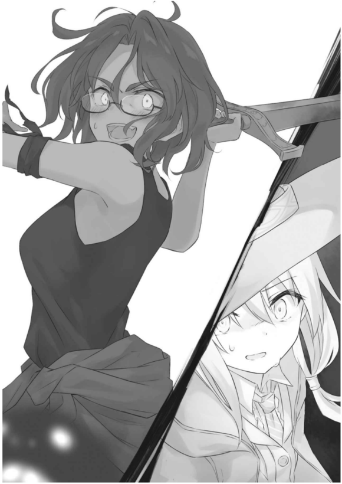
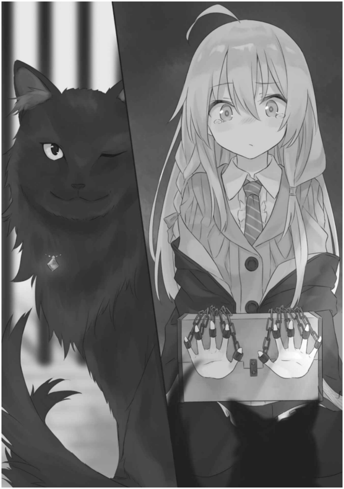
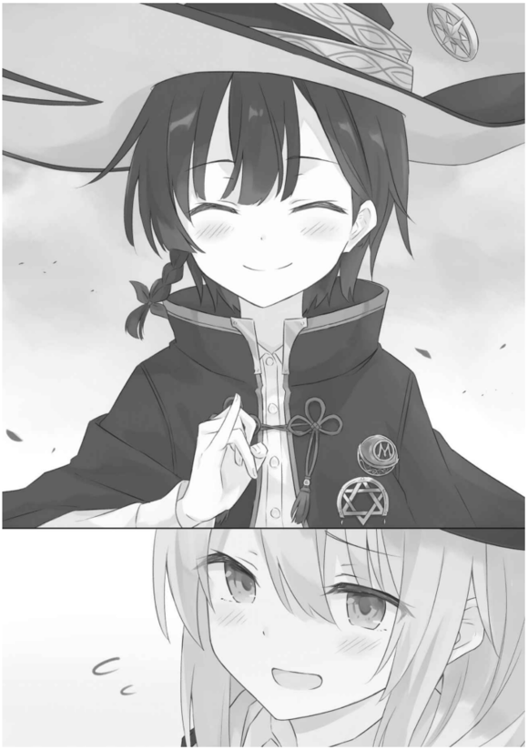
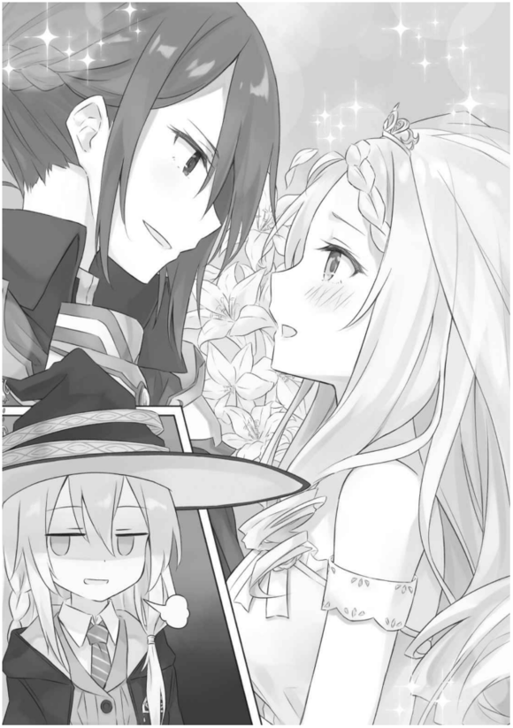

「……老实人之国？」
站在沿海小国国门前的我，从卫兵口中听到奇怪的国名，把头偏向一旁。
「没错！我国称为『老实人之国』，正如其名，举国上下没有骗子这种存在！是个垃圾一样的烂国家！」
「……是喔。」
「自踏入我国国门、走进领土的瞬间开始，无论是谁，即便是魔女大人也会无法说谎。」
我不由自主地稍感好奇。
「究竟是用什么原理变成这样的？」
「我国国王持有之剑具有不可思议的力量，在这个国家全域展开了不能说谎骗人的结界。哎呀，我知道这可疑无比，但据说原理就是这样。」
「…………」
「那么魔女大人，请问您意下如何呢？您要入境吗？」
我回覆了这个问题。
○
我申请了三天两夜的滞留申请，穿过国境大门。
初夏的凉风夹带著一股淡淡的潮水香散布于国内。
海边的街景出乎意料地色彩丰富，街道上并排的房子有红、黄、蓝、绿、紫，以及其他各种缤纷的色彩。这幅景致毫无一致性，但是色彩各不相同的感觉十分不错。
这个国家的气氛真不赖。
「魔女小姐，来买我们家的面包吧！没有多好吃又放了一阵子硬梆梆的，店面摆的还是前天卖剩的东西，但我照样用定价卖喔！来买吧！」
「……不是，谁会买那种垃圾啊？」
路过路边摊时传来令人难以置信的叫卖，使我不由自主地吐槽。
不知怎地，我的舌头比平常还要毒上两成。是因为不能说谎的缘故吗？
「你说什么呀！长时间放在室外，味道跟质量当然会变差呀！可是倒不至于不能吃！来买吧！」
「…………」
不能说谎骗人还真是种罪呢。
入境之后受到路边摊的阿姨莫名其妙的纠缠，使我心想「不会吧」，但看来这个国家的人们就是爱用这种方法。
「哎呀魔女小姐，真可爱！气死人了！话说人家最近调了新的香水，要不要买呀？虽然不想卖你这种可爱的小姑娘，但生意还是得做呀。」
「嗨你好。老实说你不是我的菜，年纪太小又没有胸部条件烂透了，可是我现在有点饥渴，要不要跟我喝杯茶——啊，不行吗？」
每个人都老实到不管什么事都实话实说，害我忍不住想骂他们笨。
当然，由于开口便会说出多余的话，因此擦身而过的人们都充满危险的气氛。
「你还是这么秃啊。」「你才是怎么还这么肥啊。」「我从以前就觉得你的嘴巴好臭啊。」「你的狐臭才薰死人。」「……哈哈哈！」「……哈哈哈！」
人们攻击性的本能摊在阳光下展露无遗。
……这里的国王究竟在想什么，怎么会把国家变成这种样子？
走在大街上，我看见了王宫。
「从谎言自我国消失已过半载！各位，如何啊？无法说谎的国家赞吧！」
碰巧王宫前，年轻的国王正在卖力演说。
他的手中握著造型太过诡异的剑，奇特到若是问我感想，我可能会脱口说出「啊，品味好差。」这种话。
王宫前聚集的民众一面大吼，一面高举『陛下超赞！』『谢谢陛下让我国没有谎言！』『多亏陛下我交到女朋友了！』『国王万岁！』等等的看板。然而没有人开口说出像样的话，欢声尽是些啊啊喔喔等随便的叫声。
看到国民的样子，国王心满意足地点头后举剑朝天。
「谎言是恶！该当唾弃！吾以此剑宣示，我国今后将永世维持毫无虚假不实、清廉正派之国！」
『我一辈子追随陛下！』『陛下我爱您！』『好棒！娶我！』『国王万岁！』『万岁！』看到老实人的赞赏似乎使国王龙心大悦，说话的音量越来越大声。
「真正的信赖将由毫无不实的言语，与无从蒙骗的真意中诞生！藉由真心话与真心话的冲撞，一同将国家带往正确的方向吧！」
我在远方以难以言喻的心情眺望眼前奇妙的一幕。突然，有人拍了拍我的肩膀。
回过头，我看到一个穿著茶褐色长袍与三角帽的魔女。年龄看来约在二十岁出头的她有著一头微卷的褐色头发。
「……什么事？」
我一问，她便——
『你是魔法统合协会派来的魔女吧？』
一脸得意、不发一语地举起写著这句话的素描簿。
「…………？」我摇了摇头。「不，我不是。」
顺带一提，魔法统合协会是执行魔女见习生测验、解决因魔法而生的各种事件、或是研究新魔法——简而言之，就是与一切以魔法命名的事物相关的神秘组织。
「顺带一提，属于魔法统合协会的人胸口会别著象徵明月的胸针喔。」
我的胸口唯有身为魔女的证明——象徵星辰的胸针。
说得这么仔细，眼前的女性这才察觉到自己的错误——她羞红了脸，慌慌张张地开始振笔疾书。然后——
『对不起认错了人请你忘记！』
对我举起写有这行字的素描簿，向我连连鞠躬好几次就跑掉了。
究竟是怎么一回事？
「……嗯？」
这么说来，把话写在纸上又如何呢？一样会写不出谎话吗？
我看往不知为何不说话的奇怪魔女与王宫前聚集的人潮，脑中突然浮现这个疑问。
就结论而言，在这个国家就算用笔也无法撒谎。
举例而言，糖果店的甜点新作——
在「新作出炉！」的标语后方就加上了一行「其实只是在以前的作品上加入新要素而已」，而其他的店——糖果店也好咖啡厅也好书店也罢，所有广告看板上的文字都不堪入目。
「店长推荐的新商品！很好吃喔！骗人的，超垃圾的。跟大便一样。吃了会死。」
「新人作家撰写的悬疑之作！那位畅销作家也为之惊叹！（写得太难看了）」
「新商品的疗效较过去增加百分之四十！只不过是好像有而已。」
诸如此类。
无论是哪家店立牌上写的文字，后半能视为诽谤重伤的词句都不像是一刚开始就有，而是后来加上的。除此之外，每个广告看板都有被消除或是刻意涂抹的痕迹，难读到不可思议。
我一面对充斥著真心话的街景感到厌烦，一面走进立有写著：
「超便宜旅馆！便宜可是超乾净！」
这行骯脏文字立牌的旅馆。毕竟这里是老实人之国，广告上的话应该不假才对。
「…………」
然而，旅馆安排我住的房间跟乾净相差甚远。超烂、超垃圾的，住在这里可能会死。
难道在旅馆老板的眼中看起来很乾净吗……？那他的眼睛一定黏了蛤仔肉。
对无情的现实备感失望的我把自己关在房里，从包包里拿出笔记簿与笔。
「……来写点什么吧。」
我想试试看无法写下谎言究竟是什么状况。
衔著笔烦恼的我最后想到要写下今天一天发生的事情。
于是我开始下笔。一面烦恼、一面回想，接著卯起劲来振笔疾书。
原来如此，看来我只要想写下谎话，手就会自己写成实话。原本想随意写些什么假的事情，我的笔迹却只留下真实。
比如说，如果想写「我其实是男人」这句谎言，纸上的文字就会出现与我意志相反的文字。即使试图念出口，也会理所当然说出「我其实是女人」这句实话。
随后修正似乎也没有意义。就算想说、想写「刚才的是谎话」，眼睛跟耳朵接收到的仍是「刚才的是实话」这令人无可奈何的句子。
纵使换了张纸、试图改变说法，无论怎么挣扎，光是使用单纯的言语无法撒谎。
「……唔唔唔。」
总有种奇怪的感觉。
对这种感觉有点上瘾的我，在那之后稍微测试了一下自己不听使唤的身体。
「……奇怪？」
接著就在写到一个段落时——
我察觉到异状。
这才发现在人人变成老实人的这个国家中，心照不宣的潜规则。
○
我隔天也到街上散步。
走在五彩斑斓的街上，我质问路边摊：「这个好吃吗？现做的吗？」逼他们坦白，买了一堆绝对好吃现做的食物，开心地哼著歌。
由于国家位在海边，因此城镇有一端面向大海。边走边吃的我耳中传来安稳的海浪声。
真惬意。
这个国家的气氛果然不错。
「可恶，我要宰了你！你这秃子，嘴巴臭死了！」「吵死了肥猪！狐臭臭成这样！」「去死！」「你才去死！」
…………
好心情立刻被破坏殆尽。
视野前方——我的行进方向有两个男人正在互相扭打、彼此叫骂。两人分别是似乎用针一扎就会爆开的胖子，还有头顶发出刺眼闪光的秃头。顺带一提，两人好像分别为狐臭与口臭所恼。
……话说根本就是昨天看到的那两个嘛。
「……哇啊。」
激烈争吵的两人不把四周聚集的目光放在眼里，就连围观的人也只有旁观，完全没有阻止两人的意思。
当然我也没有。
「不用阻止他们吗？」
我抓了一个身旁的男性这么问。我这是知道该阻止他们比较好，但嫌麻烦所以把责任丢给别人的态度。
然而——
「？魔女小姐，你难道是外地来的吗？」
我一点头，男子就笑说：
「在我们国家，这点小口角是家常便饭。可是对看他们打架的人来说刚好能纡压解闷，才会没人阻止。」
「…………」
「都怪那个蠢国王害我们心里积了一堆怨气，这刚好可以拿来调剂身心。」
他说的话还真奇怪。
藉由冲突产生正确的信赖关系——我回想国王的话，但这在民间却看似造成了深不见底的鸿沟。
「好，到此为止————————————！」
就在这时，让人想遮住耳朵的大音量在街上响起。
一看，在互相扭打的两个男人身旁，有个年轻魔女手握魔杖——使出魔法强行制止两人即将命中彼此的拳头。
身穿黑色长袍、胸口别著星与月胸针的魔女年龄比我小一点。她摇摆著整齐艳丽的黑色短发，狠瞪正在争吵的两人。
「大白天的不要为了这种无聊的理由打架，这不是在给周围的人添麻烦吗？」
她有一张熟悉的面孔，头戴熟悉的三角帽。「周围的人也是，有时间看戏就该阻止他们呀。为什么非得不是这里国民的我出面阻止不可？」
她怒气冲冲地说。
「…………」
好一阵子前收下我的三角帽的女孩出现在我眼前。
「……你在这里做什么，沙耶？」
我走出人群，站到她面前。
她也在这时认出我。
「咦……伊蕾娜小姐……？」
这么说的她瞪大双眼，吓得目瞪口呆。
看来她真的十分吃惊，甚至松开了手中的魔杖，使制止两个男人的魔法霎时解除。
突然从魔法中解放的他们就这样顺势一拳揍上彼此的脸，然后双双倒下。
「啊，对不起。」
现场响起非常非常随便的道歉。
○
「没想到居然会在这里遇到伊蕾娜小姐！这是命中注定吗？这是命中注定对吧。这样只能结婚了！」
将昏倒的两个男人拋给在场的民众后，我们走在街上跟一阵子不见的彼此交谈。
「真的很久不见了呢，你过得还好吗？」我假装没听到她说出的胡言乱语。
「托这顶帽子的福我好得很！还成功当上了魔女。」
沙耶温柔地轻抚帽子这么说。
看来她喜欢就好。
「你的魔女名是什么？」
「是炭之魔女喔。」
「嘿……跟我的还真像呢……」
我是灰之魔女，感觉好像一模一样。
「我请老师帮我选了跟灰相近的字！」
说完她得意地挺起胸膛，胸口的两枚胸针彼此碰撞，发出叮叮两声清脆的声响。
象徵星辰的胸针以及象徵明月的胸针，一共两枚。
「你加入魔法统合协会了吗？」
她点头回说：
「是，因为我想这是边旅行边赚钱最方便的方法。」
登录魔法统合协会的名册后就会获得月亮造型的胸针，能在旅行时造访的分部接受委托，看样子她利用这么方法，就某种程度赚取了稳定的收入。
原来如此，换句话说——
「今天你是为了工作来到这个国家的吗？」
「是呀，所以希望你能稍微跟我说说这个国家的事情。我对这个国家还不太熟……」
「明明不熟还接受委托吗……？」
她是笨蛋吗？
「哎呀～最近刚买比较贵的东西手头有点紧……这次的委托酬劳特别高，所以我就来了。」
「…………」沙耶的粗神经与欠缺计画的行动使我叹了口气。「那个酬劳如果是假的怎么办？」
「可是，这里是老实人的国家对不对？不可能骗人吧？」
「好像倒也不是这样。」
「什么意思？」
「沙耶，你有不要的纸吗？」
「有是有……」
「请借我。」
「……？」她一脸狐疑地偏了偏头，从口袋里拿出一张厚纸交给我。「那么，请用这个。」
她给我的那张厚纸怎么看都是这个国家的委托书。
「……这种东西怎么能拿来乱写呢？」
而且上面还密密麻麻地写满漂亮的字迹，让人很不想在上面涂鸦。
顺带一提，委托内容全文如下：
「魔法统合协会您好，我国有所委托。我国现在因国王手中之剑所赐予的力量，使全国成为无法说谎骗人的国家。无法说谎骗人并非坏事，然而我国国民却也为此百般困扰。能否请您莅临我国，为我们解决这个问题？作为答谢，将支付以下金额——」
在盯著委托书看的我身旁，沙耶鼓起脸颊说：
「这个委托酬劳是很高，可是委托人的名字跟地址什么都没写，害我得从寻找委托人开始做起。也就是说，看这张纸什么资讯都得不到的意思。所以这张纸看起来虽然很重要，但其实一点用都没有。要杀要剐要吃下肚请自便。」
「你当我是山羊吗？」
我以叹息回应气嘟嘟的沙耶，再次看向手中的纸。
我好像曾经在哪见过类似的东西。厚纸跟素描簿用的像是同一种纸，上面的漂亮字体也似曾相识。
…………
哎呀。
「我可能认识发出这个委托的人。」
「咦，真的吗？」
「你忘了我们现在在哪个国家吗？」
我把厚纸交还给她，这么说道。
○
我们来到王宫附近。和昨天不同，这里没有能称为人群的集会，广场上只有往来交错的行人。
「…………」「…………」
我们立刻就找到目标的魔女。
『有没有人看到魔法统合协会派来的魔女？她胸口别著月亮胸针。』
她一面将写有这行文字的素描簿塞到经过的行人面前，一面露出慌慌张张的神情，看起来相当可疑、十分显眼。
「可恶，又是你啊！被赶出王宫的人少在这附近闲晃！你这废物魔女！」
『咿——！对不起！对不起！』
居然还被士兵追著跑。
「……就是那个怪人吗？」「就是那个怪人。」
我对一脸狐疑的沙耶点头。
接著我们跟在逃跑的魔女后头追了上去。
『差点就完蛋了……』
一股脑儿到处乱跑的魔女在小巷子里抱著素描簿缩起身体、眼眶泛泪。
我从巷子里探出头，确认大街附近有没有士兵的身影。
「你好，昨天才见呢。」
接著我站到那位魔女眼前。
她吃了一惊。
『是昨天的魔女小姐！怎么了吗？』
「你好像在找魔法统合协会的魔女对不对？」
『是的，的确是这样……』
「为你介绍，这是我的朋友沙耶。她好像就是魔法统合协会派遣而来的魔女。」
我一手搭在沙耶的肩上，用另一只手示意她的胸口。
「啊，你好～」沙耶非常随便地打了声招呼。
她又露出大吃一惊的表情。
『那个胸针！你就是协会派来的魔女吗！原来如此……我是流沙魔女爱荷米雅，就是我向魔法统合协会提出委托的。』
沙耶取出那张厚纸问：「你说的委托书就是这个吗？」
爱荷米雅连连点头，翻开素描簿，举起『YES。』之后再次翻页，在新一页上写下『对不起，当初太著急了，一不注意忘记写下姓名和会合地点。欸嘿！』向我们解释。
她好像事先准备好了简单的应答。
话说——
「那个，你不能说话吗？」
『YES。』
「为什么？」
『因为言多必失。』
「能请你认真回答吗？」
『……这其实是有原因的。』她写道：『而这个原因跟这个国家的现状也有很深的关系，请两位跟委托内容一起听我解释。』
「嗯。」「啊，等一下我准备笔记。」
我点头回应，沙耶则是准备了纸笔。那副模样就像刚开始工作、特别认真的新人。
接著，爱荷米雅交互看了我们两人之后，开始振笔疾书。
『其实，国王陛下手中所持的剑是我做的喔。』
不知为何她看起来有点得意。
半年又再稍早之前。
国王对在王宫工作的爱荷米雅做出这种请求。
「帮吾把这个国家里的骗子全部除掉。吾只想将会跟吾说实话的人留在身边。」
一问之下才知道，被家臣蒙骗的国王难以忍受遭到背叛，心想既然如此，就将骗子全部排除就好。
打从心底尊敬国王，另一方面深爱著国王的爱荷米雅二话不说，立刻开始思考排除骗子的方法。
接著她灵光一闪。
「对了！只要张开使人无法说谎的结界就好了呀！」
然而创造结界需要庞大的魔力，于是爱荷米雅为了产生大量的魔力，牺牲了自己的声音。不过只有声音却不够，因此她在犹豫之后，决定投入身为魔法师的一切。
结果她完成了那把剑，却就此再也无法使用魔法，也变成了哑巴。
话说，你怎么会想牺牲自己的声音呢？听到一半我这么一问，她就红著脸写下『因为没办法说谎的话，可能会跟国王说出自己的心意……』
她还挺怕羞的呢。
爱荷米雅立刻将做好的剑送到国王身边。
『国王陛下。这把剑只要握在陛下的惯用手中，就会使全国立即无法说谎。顺带一提，只要放开剑，或是不使用惯用手持有就会失效。请陛下笑纳。』
如此一来，爱荷米雅送的礼物就能贴身不离国王身边了。心机真重。
「……为什么一定要用惯用手？」
『这样效果比较好。』
少来。其实她是想利用这个机会，替无法使用惯用手的国王照顾生活起居。
「嗯……是说，你为什么不说话？」国王百思不解地问。向他坦承一切后，他这么叹息道：「你居然为了吾的命令做到这种地步……若是人人如你一般忠肝义胆，吾也不必这么做……」
『陛下您言重了。』
接著国王接下剑后说：
「不过这把剑真丑啊。品味差透了。吾非得握著这种东西不可吗？」
『？』
「……糟糕。」
实话脱口而出。
那一天就在难以形容的尴尬气氛中结束。
从隔天开始，国王就以那把剑改变了国家。首先，他一一放逐不遵守命令的臣子。紧接著，国王以武力镇压因无法说谎而不满的国民。
老实人之国——或是只剩下无法忤逆国王之人的国家——就这样大功告成。
如今，国王无论想做什么，都只剩顺著他心意的人。
顺带一提，由于无法使用魔法，爱荷米雅被视为无能，惨遭逐出王宫。
『原来我是除了魔法之外没有价值的女人……』
故事最后，爱荷米雅在素描簿上写下这行字。
实在是太荒唐了。
「你既然身为魔女受雇，除了魔法以外价值薄弱是当然的。」
『我原本期待就算不会魔法，他也会把我留在身边的说。』
垂头丧气的爱荷米雅身旁，沙耶以一句「可是，为了命令把声音跟魔法能力全部投入感觉很沉重耶。国王不就是讨厌这样吗？」落井下石。
这可不是久久重逢的同时，开口说出什么命中注定、什么结婚的人有资格说的话。
把傻眼的我晾在一旁，沙耶望向委托书说：
「爱荷米雅小姐的委托是把这个国家回归原状对不对？要怎么做才能回归原状？」
『只要让国王陛下的剑脱手就可以了。』
「原来如此。」沙耶点头，我则是问：「如果把剑弄坏会怎样？」
『注入剑中的魔力就会消失，我的声音跟魔法都会回归正常。』
「呵呵～」「既然如此，趁国王像昨天一样演讲的时候破坏最轻松呢。」
『下一次演讲在一个月后喔。』
「跟伊蕾娜小姐两人共处一室一个月——」「还是换个方法吧。」
『如果要从国王陛下手中把剑抢走，我想还是进入王宫比较确实。』
「……可是，如果不能说谎，想进去不是很困难吗？只要被问到进入王宫的理由就结束了。」
的确。
「毕竟这里是老实人之国，没办法骗他们放我们进去吧。」
我继续往下说：「可是，只要用爱荷米雅手上的那个，或许就有办法。这个国家只是不能说谎，但想要蒙骗过关方法要多少有多少。」
这个国家即使不能以言语骗人，只要利用文字就有可能。
爱荷米雅点头举起『YES。』自己做出的结界上有何漏洞——已然成为这个国家心照不宣的那项事实，她自身似乎也有所察觉。或许，这还是刻意留下的盲点。
「……？伊蕾娜小姐是什么意思？」
就让我来解释吧。
我跟爱荷米雅小姐借了笔跟素描簿。
「听好啰？这要这样做就好——」
接著，我在上头写下行动计画。
…………
我在不知不觉间开始帮忙沙耶达成委托，但这件事我直到最后都没有提起。
毕竟在这无法说谎的这个国家，就连想掩饰自己的害羞都有困难。
○
「失礼，请问诸位有何贵干？在这之后没有国王陛下的允许不许进入。」
来到王宫入口，不出所料，我们三人被卫兵拦下。
守门的卫兵一发现爱荷米雅在我们之中，就立刻大喊：
「啊！你这家伙！究竟在这里做什么！你不是被赶出去了吗！」
『咿！对、对不起！对不起！』
「喂喂喂。」爱荷米雅一百八十度向后转，我一把拉住她的领子，砰一声拍了一下沙耶的背说：「沙耶，快点跟他们解释清楚。」将沙耶推向前。
挡在卫兵面前的沙耶堂堂正正地举起一张纸。
「嗯哼，卫兵先生，你们看得懂这张纸上写什么吗？」
字迹骯脏的纸上写著：
「撤回放逐流沙魔女爱荷米雅之饬令。同时，允许灰之魔女伊蕾娜、炭之魔女沙耶进入王宫。」
上面还确实签了国王的签名。
「流放被撤回了……？很可疑啊。这是真的吗？」
哎呀哎呀？
「你在说什么？这里不是老实人之国吗？怎么可能说谎？还是你的意思是国王欺骗我们？」
「……唔，的确。」
「好了，快点让我们过去。」
「…………」
守门的卫兵心不甘情不愿地从我们面前退开。
接著我们大摇大摆地穿过大门。
手上，拿著假的诏书。
这个国家一旦开口便不能说谎。然而，写成文字却是另一回事。
文字与言语不同，能够消除窜改。只要写好一串文字后再擦掉，就能轻而易举地撒谎骗人。
话语只能以话语修正，因此无论如何都不可能说出假话。但换做文字，除了用笔之外，操弄的方法要多少有多少。
昨天我在旅馆随便写写时发现了这项事实。看来这个国家随处可见的骯脏广告看板就是用这种方法做成的，如此一来说是房间乾净漂亮的旅馆会这么脏也不无道理。
这个国家的人们知道能以文字说谎，却对此绝口不提。
「哎呀，太顺利了。真不愧是伊蕾娜小姐。」
「你过奖了。」
走在城堡内，沙耶望著我伪造的公文说。顺带一提，国王的签名是我学他的笔迹写的。只要随便写下『这是模仿国王的笔迹写下的签名』仿造国王的笔迹，接下来只要把签名之外的句子擦掉，伪造便大功告成。
『简直就是笔比剑更有力量呢！』
不知为何一旁有个一脸得意的人高举奇怪的标语，我就当作没有看到吧。
「话说回来，爱荷米雅小姐，我们接下来要去哪里？」沙耶也假装没有看到。
『咦？应该是王座大厅吧？国王陛下只要有空都会在那里。』
「喔喔～那么王座大厅在哪？」
『还很前面喔。』
「我知道了。那么两位跟我来！我来保护你们！」
「沙耶很来劲呢。」『反正我无法战斗，就乖乖躲在最后面吧。』
「包在我身上。只要我出手，眨眼间就能抢走国王手中的剑！」
这份自信不晓得是从哪来的。
「你有什么妙计吗？」
「首先我从正面进去，然后说『哎呀～人家是魔法统合协会的魔女～现在正在研究魔法，能请陛下借我看看那把剑吗？』这么一来国王就会把剑给我了呀？你看这样不是无懈可击吗～嘿嘿！」
「无懈可击地漏洞百出呢。」『陛下才不会因为这点原因放开我的剑！』
既然有两位魔女，让其中一人吸引国王的注意力，另一人偷偷把剑抢来似乎比较确实。不，就算只有一人应该也做得到。
总之，只要在跟国王对峙前随便说好该怎么配合就好——我一面这么想，一面走在王宫之中。
就在这个时候——
「吵什么，究竟发生何事——」
我们眼前的门开了。
国王走了出来。
国王出现了。但是怎么会？不是还很前面吗？我头上冒出问号回头。
接著，我看到爱荷米雅手上的文字。
『抱歉，王座大厅在这里。比我想得还近。』
就各种意义上，那都是句相当随便的道歉。
○
「既然行迹败露就没有办法。国王陛下，请您快点把剑交出来！」
领悟到无法安全解决的我立刻取出魔杖指向国王，向前踏步将国王逼回门内。
但是国王却一面退后一面大喊：
「入侵者啊啊啊啊啊啊啊啊啊啊啊啊啊啊啊啊啊啊啊啊啊啊啊啊！」
令人惋惜地唤来了手下。
随后——
什么什么？是国王陛下的声音！出什么事了？随著这些呼喊声，敞开的门后接二连三地涌现大量的士兵。
士兵眨眼间挡住我们的退路。
唔唔。
「沙耶，国王我来应付，士兵交给你处理。」
「包在我身上！」
沙耶举起魔杖，而说到爱荷米雅，她则是在我身边高举写著『啊，我不参加战斗。』的素描簿。
她丝毫没有参战的意思，不过这比随便出手来得好。
「国王陛下，请您把剑交给我。」
我一步一步缓缓拉近与国王的距离。
「啊啊，少啰嗦！闭嘴！爱荷米雅你……究竟是做何居心！」
『国王陛下，那把剑太危险了。不过制作那把剑给您的我没资格这么说。』爱荷米雅躲在我背后高举素描簿。『所以请您还给我。』
「说什么蠢话！这把剑可是引领这个国家至高无上的武器。只要有这把剑，吾就能把国家带往正途！」
接著——
「即使有想来夺剑的恶徒，吾也能一人应付——就像这样！」
国王以剑横扫。
魔力从国王的手边射出，形状有如新月的青白色光芒乘著挥出的力道，朝我们飞来。
「——嘿！」
我理所当然地避开。
攻击却打中沙耶。
「好痛喔喔喔喔喔喔喔喔喔喔喔喔喔喔喔喔喔喔喔喔喔喔喔！」
她发出临死悲鸣般的惨叫。
「啊，抱歉。」
「呜呜……好过分……」
话说，我怎么没听说那把剑会射出魔法——
『只要挥舞那把剑，就能射出剑里累积的魔力，要小心喔。被打到会超级痛喔。』
怎么不早说呢？
「啧……面对魔女果然非比寻——那么这样如何！看招！」
接著国王毫不间断地射出剑里的魔力。
我细心地一一击落每一道剑光，不让攻击打到沙耶。我身后则是传来沙耶大喊「嘿呀！」「接招！」等等，半自暴自弃地守护我背后的气息。
「国王陛下，消除谎言后这个国家真的变好了吗？」
「当然变好了！我国的民众都在欢欣鼓舞啊！」
「那难道不是因为陛下只留下称赞您将国家变成如此的人，而把其他人全驱逐出境了吗？」
「有何不同，叛乱因子本该受到摘除！」
「也是呢——关于这点我也同意。不过，留在这里的人也有可能不全都赞赏陛下的丰功伟业喔？」
「……你说什么？」
在国王皱眉时，我回想起在这个国家所见到各式各样的广告看板，以及彼此斗殴的男人。
「这个国家是老实人之国对不对？所以人们才会诚实地彼此坦白，时而以互相斗殴袒露真心。然而，在这些现象背后却仍旧蕴藏著恶意。」
刻意说出不必说出口的事情，这么做很有可能并非纯粹是为了对方好。也许单纯是为了宣泄累积的压力。
刻意写下不必写下的资讯也有可能相同。不，难保不是怀有恶意的人刻意加上的。
在王宫前听演讲时尽管发出欢声却仍旧不发一语，也有可能是在隐藏真心。
「真相不一定永远正确，所以这个世界才需要谎——」
「伊蕾娜小姐！已经快没有时间了！敌人太多我处理不完！我的头快要烧起来了！讨厌啦啊啊啊啊！」
『加油，魔法统合协会的魔女小姐。』
「你也来给我帮忙啦啊啊啊啊啊啊啊啊啊！」
『对不起，我是专门观摩的。』
「看来已经没有时间了，就快点结束吧。」
但是国王却对我的提议嗤之以鼻。
「快点结束？怎么可能？吾的攻击不就让你应接不暇了吗？」
「……不好意思，我早就准备好拿走陛下的剑了。」
「哼，说大话。」
「您看了背后还能这么说吗？」
「……什么？」
国王不减轻攻击的密度，瞄了背后一眼。随后，他的动作戛然而止。
我悄悄安排的扫帚飘浮在他背后。
「什、什么时候——」
不等国王说完，我就以全速将扫帚唤来。
下一刻，随著咚一声钝响，扫帚撞上国王的背。国王则是低声发出闷声朝这里飞来。
他手中的剑在这时脱手。
「嘿！」
我在剑落下的同时以魔法召唤出一块巨大的铁块拋了出去。磅一声沉重的巨响，铁块陷入地里，轻而易举将剑折成两半。
随著一声爽快的脆响，魔力一口气从剑中挣脱，化成青白色的光芒回到爱荷米雅身边。闪闪发亮的光粒子宛如夜空中浮现的繁星。
著迷地望著那幅美景一阵子后，我在原地屈身向前。
「怀有恶意的人未必需要谎言才能成就坏事，留在这个国家内的人也未必都是善人。」
「…………」
「然后，说谎的人也未必全是坏人。」
真实若是剑，谎言便是鞘。谎言的鞘正是为了避免剑胡乱挥舞伤人，而隐藏了真实的锋芒。
谎言也有这种使用方式。
「…………」
国王缓缓移动身躯，当场跪倒在地。
他一动也不动地盯著地板看，不知是在思考，或是纯粹感到失落。
接著，十分漫长的数秒过后。
「那么你要吾如何是好……！吾、吾难道错了吗……！」
他不知对谁低语。
「没有，陛下没有错。」
回应国王的是个我没听过的声音。
我立刻就了解到声音的主人是谁。
开口说话的人是爱荷米雅。
「国王陛下只是——只不过是对自己的心情太老实了一点而已。」
——所以，从今以后还请您放松心情、撒点小谎、别提不必说出口的事，并尝试错误继续走下去吧？
爱荷米雅露出温柔的微笑这么说。
这不知是实话，还是为了国王著想而说的谎言。
已经没有人知道了。
○
在那之后。
国王在民众面前为将国家变成不能说谎的国家半年一事致歉。至今为止所做的一切都是吾的错，请大家原谅——他诚心诚意地说了诸如此类的话。
国民们的反应出乎意料地淡薄，没有发生暴动也没有对国王叫骂，而是淡淡地接受道歉。在话说完时，广场上甚至响起稀疏的掌声。
国王一定还没取回国民的信任。
重拾使用魔法的能力、声音回归正常的爱荷米雅回归于王宫工作的岗位，大为欣喜。
「接下来会越来越忙！」这么说著的她格外起劲，在替不幸事件善后的国王身边双眼闪闪发光。
在国王处理完杂务之前——在国家回归正常之前，似乎还需要不少时间。
「伊蕾娜小姐，关于这次的酬劳……」走出国门来到国外，沙耶拉住我的袖子说。
「怎么了？」
「这次的工作伊蕾娜不是有帮我的忙吗？所以我想应该要给你相应的酬劳……才对。」
「咦，不用啦。」
「怎么可以不用！」沙耶的眉毛难过地下垂。「规则上也说，必须给予协助达成委托的魔法师相应的报酬。我一定要报答你。」
「什么都遵照手册会变成不懂得变通的人喔。」
再怎么说，这次我又不是为了钱才帮忙的。但这句话我打死不说。
「可是你一定要让我报答你！」
「……不是，真的不用。」
勤于致谢的她与不断拒绝的我。
感觉有点奇怪。
「那么，就这样吧。就兼做送我帽子的回礼，我送你一样好东西！」
咚一声敲手的她在包包里翻翻找找，拿出一个小东西。
她手中是两条项炼。
她把其中一条塞给我。
「……这是什么？」
我接下项炼这么问，她便开心地哼笑了两声。
「哼哼～这个呢，是我为了跟伊蕾娜小姐重逢时，用全部的财产准备的东西。顺便告诉你，就是因为买了这个我才会身无分文的。虽然也因为这样非得接受这个委托不可，不过在委托的国家遇到伊蕾娜小姐只能说是命中注定了呢！」
「咦，好沉重……」
我想这个的沉重程度应该能与爱荷米雅匹敌。不如说，我甚至想到她可能是为了给我这个，才积极地想跟我致谢。心机好重。
「请你把那个当成是我，好好珍惜喔！」
「…………」
我不太想收下这种东西的说……
这样不就会睹物思人了吗？不就会触景伤情了吗？
这对旅人而言并不是好的倾向。
…………
我不发一语盯著项炼与沙耶数秒，接著这么说：
「谢谢你，我会好好珍惜戴在身上的。」
边说我心里边想，还是算了吧。
偶而放松心情，试著改变自己的生活方式或许也不错。
「那么，就在这边道别吧——我还得去一趟魔法统合协会的分部，伊蕾娜小姐也得继续旅行对吧？」
「是的。」我戴上项炼，说：「那么就再见吧，沙耶。」
「……我们再于某个地方相见吧。」
「如果有机会就再见吧。见不到的话，这就是最后一次见面了。」
「我才不会让这变成最后。」
边说她边竖起小指，朝我伸了过来。
「……这是做什么？」
「这是在我的故乡流传，约定时的咒语！请勾住我的小指。」
「…………」
究竟为什么勾住小指会是咒语？
我心存怀疑，朝她伸出小指。
而她则是用自己的小指勾住我的小指。
「伊蕾娜小姐，约好了。我们总有一天一定要再见。」
那时，我一定会变成更优秀的魔女——沙耶微笑著这么说。
所以我也回应：
「我会边旅行边耐心等你的。」
那是座由细长高耸的树木所形成的森林。
我骑著扫帚，飞行在强行将树之间的空隙扩张而成的蜿蜒道路上。地上散落的树叶发出沙沙的声响蠢动著。
气候凉爽，和风徐徐。
哎呀，真是心旷神怡。
在这种地方睡午觉一定非常舒服。
「…………」
在森林中前进了一阵子，我看见一辆马车。货台上空空如也的马车十分碍事地挡在窄狭道路的路中央。
我只看得见马车背后，所以看不见驾驶的身影。是在悠闲地睡午觉吗？还是这代表此路不通呢？
「……嘿。」
无可奈何，我只好稍微拉起握柄，使紧贴地面飞行的扫帚缓缓开始爬升。
大不了飞越障碍就好。
碰巧来到马车正上方时，我低头往下看。
我看见马车的车顶、在路边吃草的马——以及倒卧路边的男性。
马车会在路中央一动也不动的原因一目了然。驾驶不是在偷懒睡午觉，也不是刻意拦阻我的去路。
「…………」
他体无完肤浑身是血。
一动也不动地瘫倒在马车旁。
○
究竟是怎么一回事？
我完全搞不清楚状况，但我知道这样下去驾驶会有生命危险。
直接飞走似乎太冷酷无情，于是我立刻从扫帚上降落，拔出魔杖以魔法替他治疗。
温暖的白色雾气包围他全身，治疗不停渗出鲜血的伤口，以及布满全身的瘀青直到伤痕消失。
他还算年轻，但比我年长，大约有二十五岁左右。一头黑色的乱发沾满尘土而显得黯淡。
「……呜……」
在全身伤疤淡去消失的同时，他清醒过来。
朦胧的双眼望著森林中的天空，这才终于发现我的存在。
「你还好吗？」我从他上方问。
「…………」
他没有回应。
「那个……你还好吗？」我在他的视线前方挥了挥手。
「…………」接著他眨了眨眼睛、张了张嘴，最后终于坐起身体。「那、那个……！虽然不知道你是哪位，但我昏倒多久了？」
不知是否还没清醒，他的问句听来颇为慌乱。
「我只不过是碰巧经过而已，这种事情我不知道——但是应该没有多久才对。」
毕竟血还没凝固。
「太、太好了！这样就赶得及了……！那个，虽然不知道小姐是谁——」
「伊蕾娜。这是我的名字。」
「伊蕾娜小姐！能请你帮我一个忙吗！」
他伸手想握我的手，所以我避开后彬彬有礼地回绝：「对不起，我还得赶路。」
「求、求求你帮帮忙！」
「……唉。」
我不禁叹气。我有一股麻烦事不断逼近的预感。
不理会半不耐烦的我，他拚命地继续说道：
「我百般理解获救后还请你帮忙脸皮很厚，但这样下去会发生不得了的大事！求求你帮帮忙！请助我一臂之力！」
他在土地上下跪，一次又一次地磕头。求求你，求求你，一而再，再而三地复诵。
……这种情况好像在哪遇过呢。
仔细想想，帮人疗伤被卷入奇怪事件中的部分也如出一辙。
我开始怀疑这是无可避免的命运。难道说我有帮助伤者因而被卷入事件中的体质吗？
我一面若无其事地用手指确认胸口的星辰胸针还在不在，一面这么说：
「好吧，就听听你想说什么吧。」
接著在这间不容发的瞬间——
「这样下去，会有很多人死掉！」
他这么大喊。
与其说是令人好奇，不如说是莫名其妙呢。
结果，他跟我说了他的故事。
他说，驾驶马车的他是个商人，正在将某件货物载运到前方国家的途中。
然而，马车却在半途遭遇预料之外的劫难。
简而言之，他遭受强盗袭击。
一匹马与一个软弱的男人对上数十名身强体壮的强盗，他不可能有胜算。轻而易举被拖下马车的他被强盗拳打脚踢、拿刀砍杀，就连值钱的东西也几乎全被抢走。
「真凄惨呢。」
「是啊，很痛很痛，保住一命真的是不幸中的大幸。」
「——那么，为什么你被强盗袭击会演变成会有许多人死亡呢？」
他其实是假扮成商人的王室成员吗？强盗会因为复仇死光的意思吗？
他深呼吸一口后说：
「那个……我的马车上载的，其实是前方国家委托制作的炸弹。」
「炸弹？」
「是的，他们说要拿去炸坑道还什么的，我不太清楚。不过这颗炸弹可是花了一大笔钱才做出来的。」
「喔喔～大概多少钱？」
「大概一万枚金币吧。」
我开始头痛。明明只是用来炸坑道的炸弹居然这么贵。白痴吗？
不过原来如此。
我大概能猜到接下来会发生什么事。
「也就是说，由于超昂贵的炸弹交到了强盗手中，给了强盗拿来做坏事的机会——是吗？」
「没错，这下大事不妙了。强盗如果偷偷把炸弹运进国内，有可能会造成很多死伤。」
「的确大事不妙了呢。」
话说，从他的语气听来，像是不在乎强盗会不会把炸弹运进前方的国家呢。
怎么了？难道是感情不好吗？又为什么要做这颗炸弹？
「是啊……更重要的事，那颗炸弹非常危险，一不小心用错方法就会立刻引爆。」
「什么跟什么啊……」
「我有参与开发才会知道这点，但炸弹的构造极为复杂。花了这么多钱，威力当然也不容小觑。」
「你有帮忙制作炸弹？」
「是的，我帮忙设计还有撰写说明书。」
「…………」
嘴上说是帮忙，不如说是负责开发的核心人物嘛。这种人与其说是商人，难道不该称为开发者吗？
他为什么要说谎？
「炸弹的操作方法非常简单，但是不能排除出错的可能。」
「也就是就连强盗也能轻松使用的意思吗？」
「就是这样。由于谁都能使用，所以不知道接下来会发生什么事。」
「…………」
男人一定是想阻止强盗使用炸弹袭击自己的故乡吧。
原来如此，我能理解他慌张的原因。最令人伤心的，莫过于自己的国家因自己做的炸弹而毁灭。
「这样下去一定会出事，请你一定要想办法从强盗手中抢回炸弹。」
的确，如此一来他说得没错，难保总有一天不会发生憾事，这点显而易见。
这让我感受到现在没有时间烦恼，置之不理势必会造成伤亡。
下意识拿起扫帚时，我发现连自己也焦急起来。
「我从上方观察强盗们的动向。你沿著这条路去前方的国家通知他们炸弹被偷了。」
「…………」他一瞬间瞪大眼，一声「啊，好、好的！我知道了。」接著立刻跳上马车。
随后。
「那么，走吧。」
我骑上扫帚的下一秒。
恐怖的爆炸声震撼整座森林。
撼动空气的声响使树木摇摆，动物们也顿时陷入慌乱。仰望天空，我看到尖叫逃跑的鸟群。
我们面面相觑。
他脸上的表情五味杂陈。
这时我有点后悔悠闲地跟他聊了这么久。
○
请等一下，我也要去——我拋下慌慌张张这么大叫的男人，一个人飞去。
我不想让开发炸弹的本人看到目的地的情况。
……但这是我的藉口。实际上，我一定也慌了手脚。响彻森林的爆炸声正是如此震撼。
我乘著扫帚飞到树梢之上，看见南边的天空升起淡淡的褐色烟尘。
朝烟的方向飞去，我找到一个小小的聚落。正确来说，应该是曾是聚落的地方。
「…………」
那里没有任何活人。
只有一片血与肉的碎片。
人也好、简陋的木造平房也罢，全都遭到摧毁。一切都有如被锐利的刀刃漂亮地切成碎块。
聚落的中心是一个宛如某样巨大的东西坠落后留下的大坑洞。沙尘从中扬起，如烟一般升上半空。
「…………」
接著我在现场捡到两张破碎的纸片。
其中一张是说明书。
另一张，是一封信。
我读了那封信。
「……原来是这样吗。」
我将信塞进口袋——只跟那个男人说了我在现场见到的光景。
他听了我的报告。
「是吗……太遗憾了。」
仅仅吐出这句话。
「商人先生你还好吗！森林传来好大的声响……」
来到林中道路尽头的国家，迎接我与男人到来的不是卫兵，而是国家的辅佐官。
他也因为刚才的事件手足无措。
「辅佐官大人——这次真是万分抱歉！」
接著男人简单地解释了来到这里之前的始末。
听到发生巨大爆炸声为止一切原委的辅佐官深深叹了口气。
「居然……发生了这种事……商人先生没有受伤吧？」
「幸好有经过的魔女大人替我治疗……不，我的伤不要紧。比起这个，我遗失了坑道要用的炸弹。这是我的失职，这毫无疑问是我该负责。」
「不不不！请不要责怪自己！这是不幸的意外，遗憾的是有人身亡……」
唔唔？
「可是，对方是强盗吧？难道不是自作自受吗？」
我不禁从旁插嘴。
辅佐官瞪了我一眼。
「魔女大人，您这种说法我无法认同。即使是坏人，有人丧命怎能不令人遗憾？」
「…………」
你说什么？
我摸摸装著信的口袋，并没有继续多说。
男子拋下被留在当场的我，继续解释道：
「可是，这次真的万分抱歉……您能否再给我一次机会？」
「？机会是指什么？」
「能让我再做一次炸弹吗？我不跟贵国收钱，连第一颗炸弹的钱我也不收。作为缴纳期限延后的赔偿，我会以我的权限无偿制造新的炸弹送给贵国。」
男性提出的要求令辅佐官大吃一惊。
「那怎么行……！太不好意思了！应该是要我们支付慰问金给您才对呀！」
「慰问金什么的，请别客气了。我想尽到我的责任，能让我平安将炸弹送来让贵国使用吗？」
「哪里，您太客气了！」
「哪里哪里，您才太客气了！」
…………
荒唐的推来推去持续了好一阵子，最后由男子重新做一颗炸弹，辅佐官支付慰问金的折衷方案解决。
慰问金的金额是一百枚金币。
这比原本的金额还要少了不少，但究竟男子——和他的国家是否会就此满意？
「…………」
我保持沉默，在当下不发一语。
「那么，我们一周后再于这里相见吧。」
男子说完便离开了，而我只是静静看著他的背影。
○
一周后，我又于林间道路与他相遇。
「嗨，你好呀。在这里遇见你真巧。」
我挡在马车前面对他挥手。
男子从马车上俯视我说：
「嗨，魔女小姐，一周前真是谢谢你了。真的很感谢你治好了我的伤。」
「不必客气。」
「你要不要跟我一起坐马车啊？我想请你吃点什么，报答之前的恩情。」
「不必，我还得赶路。」
「太可惜了——那么我就失陪了。」
接著他再次举起缰绳，让马车前进。
但他却立刻停了下来。马在原地跺脚，烦躁地发出呼噜噜的嘶鸣。
停下马的是我。我摸著马头，些许强硬地阻止马前进。
「……？你在做什么？」男人露出隐约透露出厌恶感的笑容俯视我。
我站在马车前，阻挡他的去路。
「没有，我有点事情得告诉你。」
「……？什么事？」
「其实呢——」
我对他这么说：
「前面的国家退回了向你订购的炸弹。」
「……你说什么？」
「哎呀？太远了听不清楚吗？」
「我是听不懂你在说什么。为什么前面的国家要退回我们的炸弹？然后，又为什么是你来通知？」
「天晓得？难道不是对方发现你们想用炸弹做什么的诡计了吗？」
「…………」
「看来你们的国家还真会耍小手段呢。」
「…………」
我走向马车。
「现在马车上载的是炸弹对不对？难不成跟上次是相同的款式吗？」
我这么说，打开车厢。
无庸置疑，上面载的是炸弹。
……不，里面是拆解后的炸弹零件。
上次化做残骸的强盗聚落中，也有这个炸弹的组装说明书。
上面写著「一不小心使用不当就会立即引爆十分危险」等等的注意事项，以及「请在搬进坑道前先于国内组装」这令人匪夷所思的警语。
「你打从一开始就想引发误触吧？」
「不是，那毫无疑问是不幸的意外。」
「因为误触而死亡的不是前方的国家而是强盗，所以才说是意外吗？」
「……你从刚才开始到底想说什么？」
很简单。
他所运来的炸弹充满疑问。
明明说是于坑道使用，杀伤力却强得不合理。此外，还是一不小心就会引爆的瑕疵品。
再加上——这虽然是我独断的推测——无法排除说明书本身就是刻意引发误触的假说明书这个可能。换句话说，制造炸弹的他的国家，是否打从一开始就是企图以误触为掩饰，企图害人性命？是否为了让他们在国内组装，进而在国内引发混乱？
「前方国家的辅佐官要我传话，你愿意听吗？」
「…………」
我将他的沉默视为肯定继续说。
以谎言回应他的谎言。
「我国再也不会向贵国订购任何商品，再也不想继续跟贵国有所关连……就是这样。因此，请你载著炸弹回去吧。」
「……开什么玩笑，你以为我们花了多少钱在这颗炸弹——」
「啊，这么说来，这是前方国家给你的慰问金。虽然不多，但请你收下——嘿咻。」
我打断他的话，将一百枚金币堆到马车上。
很重。重得要死。
我扭扭肩膀。
「这样应该就够了吧。好了，快点回去吧。」
然后我说：
「机会难得，要不要用那颗炸弹炸个坑道呀？」
○
在与他重逢约一周前。
他跟辅佐官荒唐的推来推去结束之后。
我从口袋中取出某封信。
「辅佐官先生，您对这封信有印象吗？」
那是散落在强盗聚落残骸中的信。
「……！那是……」一见到那张纸片，辅佐官立刻脸色发青。
「您果然有印象呢。」
不，不可能没有印象。
毕竟信的最后确实细心签下了辅佐官的名字。
为了得知一国辅佐官找强盗究竟有何贵干，我可是熟读了这封信一番，但是越读我越发觉得匪夷所思。
『我希望各位能盗取炸坑道用的炸弹。若是成功，将赠与金币百枚。』
这就是信中内容的摘要。
给人「哎呀呀？」的感觉呢。
「看来强盗袭击并不单纯是偶然呢。」
恐怕是事先安排的吧。他们一定是认为，比起用一万枚金币向关系不好的国家购买，从无恩无怨的强盗手中取得还比较划算。
愚昧之事莫过于此。
「……你想要什么，魔女大人。」
他是打算做出什么封口的提案吗？
「您愿意给我什么？」
「你得对这件事情保密。」
「是吗？」我撒谎道：「可是，我想不只是我，也给商人什么点东西比较好。毕竟他跟我一起也看了强盗们的尸体，也读过我手中的信。」
「你说什么……？可是他约好要再做一个炸弹给我们……」
「哎呀？也许那颗炸弹会是向贵国报复的武器也说不定。对方无论拿什么来，建议您都要坚决退回。」
「…………」
我对沉默且沉思的辅佐官说：
「啊，对了对了。话说关于封口费……」
我拍了一下他的肩膀。
「就一百枚金币您说如何？」
若是能保护自己国家免于可恨他国的侵扰，这不是十分划算吗？我这么对他说。
○
因为人命损失令人遗憾，所以为了不让憾事一再发生，我以自己的方法做了一番努力。
然而，在这之后两国间究竟迎向什么结局，身为旅人的我不得而知。
若是硬要预测的话，恐怕两国现在仍旧处于不相往来的冰冷关系中吧。
利用强盗陷讨厌的国家于不幸的国家也好。
企图使炸弹意外引爆，陷讨厌的国家于不幸的国家也罢。
双方都愚蠢无比。
但是即使如此，比起让炸弹引爆，冰冷的关系可能还稍微好一点。
这样下去只要时间慢慢流逝，或许总有一天，对于怀抱的炸弹、对于对方的憎恨可能都会风化消失。
正因如此，我不断祈祷，希望两国能耐心等候。
直到这层关系消失的那一天为止。
这是稍早之前，我和我的老师——芙兰老师再会时发生的事。
「我也曾经有段憧憬《妮可历险记》，边旅行边写小说的时候喔。」
像是突然想起这件事般的老师这么对我说。
「……是喔，这样啊。」
「你听起来没什么兴趣呢。」
「不敢不敢，我非常好奇。」
「反应也有点薄弱呢。」
「我只是不知道该做什么反应而已。」这个人怎么突然说这个？我偷偷把这句话藏在心底。「然后，你说曾经，是代表写到一半不写了吗？」
「没有，不是喔。与其说是写到一半不写，应该说是写到一半不得不放弃来得正确。」
「？什么意思？」
「由于那是我当成兴趣写的作品，所以原稿没有拿给别人看过。在写了约一百张原稿用纸的时候回头读了一次，我才发现实在是太丢脸了害羞到不行，在那之后我就再也不想下笔了。」
——回头一读背就痒得不得了。
老师垂下肩膀这么跟我说。
「所以就不得不放弃了吗？」
「是呀，甚至会想『讨厌，我的文笔这么差吗……？』我心里想著『谁会继续写这种东西呀』，就把原稿封印在包包最底下了。」
「啊，没有丢掉吗？」
「毕竟是努力写的原稿呀，总觉得丢了可惜。」
「……说了这么多，其实老师还是喜欢自己的作品吧？」
「也是，你也可以这么说。毕竟这不堪回首的过去也是我的一部分，总让人舍不得拋弃，当时我是这么想的。」
「嗯。」
我点头。
接著老师的肩膀垂得更低，又深深叹了口气说：
「当然，我不打算让任何人看自己写的小说。因为那是我一个人的回忆—但是，在那之后却偶然间发生了一件糟糕事。」
「什么事？」
「在造访某个国家时，某个看到我手上包包的商人突然对我说——」
喂！小姐！那个包包难不成是传说中的旅人包包吗？一定是！不会错！这一定是传说中的旅人用的包包！欸，把这卖给我吧！求求你！
——他好像是这么说的。
他究竟在说什么？芙兰老师歪了歪脑袋。那时的包包是芙兰老师在随便一家当铺买的便宜货。她完全没听说过什么传说中的旅人，当然，也不是因为这个原因买下包包的。
「不过，物品的价值因人而异，那个商人为了买我的包包提出了难以置信的天价。我吓了一大跳，甚至还怀疑是不是新的诈骗手法。」
「嗯……」
我好像知道接下来会发生什么事了。
「然后呢，当时的我非常缺钱……二话不说就把包包卖掉了。我把包包里的行李拿出来，当场换进新买的便宜包包里，把旧包包交给商人。当然，我也收下了一大笔钱。」
「…………」
「自己写的东西就跟毒品一样，偶而会想拿起来重看。在把包包卖掉不久之后，我在新的包包里翻找用难堪文笔写下的小说。这时我才发现恐怖的事实。」
「…………」难不成。「……小说不见了吗？」
「………………………………………………我吓了一大跳。我居然把小说留在旧的包包里卖了。」
「哇啊……」
「我立刻回到商人所在的地方，可是自从卖掉包包之后已经过了一周以上，商人早就去别的国家了。结果，在那之后我到处寻找那个商人的踪迹，但别说他，我连包包都没找到。」
她如此说。
这时芙兰老师用双手遮住脸。
「……我有的时候会想，那份原稿用纸如果交到别人的手中，被别人看到的话怎么办？如果被人取笑的话怎么办……」
「老师……」
她的耳朵好红，没问题吧？
「一回想起旅行时的种种，想到弄丢原稿用纸的事情，我就害羞到不知道该怎么办才好。背上就会不自觉地发痒。啊啊，怎么办……」
「…………」
没什么特别的话想说的我陷入沉默。
沉默持续了一阵之后，放下手的老师回复满不在乎的表情说：
「总之，我刚才突然想到曾经发生过这种故事。虽然这段记忆十分难为情，可是到现在都已经成了过往的回忆，可说是个有趣的旅行轶事吧。」
「……是吗，这样啊。」
「你好像没什么兴趣呢。」
「不敢不敢，我听得津津有味。」话说回来，「结果老师想表达什么？」
「想表达的事情当然只有一件呀。」老师说：「我想你从今以后如果继续旅行，一定会遇到各式各样的事情。」
接著，停了一拍后老师直直地盯著我看。
「下次再见到我时，一定要跟我说开心有趣的故事——的旅行轶事给我听，就是这样。」
说完老师温柔地微笑。
○
我碰巧在这个时候想起跟老师的对话。
「…………」
那是我偶然间经过某国书店时发生的事。
「《芙兰冒险记》是……」
书店里摆著写有似曾相识书名的书。顺带一提作者叫做芙兰，我似曾相识到不行。
…………
我立刻站著读了起来。这么做也许有失礼节，但我正是对内容这么好奇。
书本的内容相当单纯，是本关于魔女芙兰在各国观光游历的游记小说。不知怎地，主角的个性跟我的老师如出一辙。
「魔女小姐！想读就买书吧！」
读了一会儿，我就被店员发现了。店员手持撢灰尘的棒子靠近我，「……嗯嗯？哎呀，居然在读《芙兰冒险记》，魔女小姐品味不错嘛。」店员对我这么说。
「这本书很有名吗？」
「那当然，这本小说在这个国家无人不知无人不晓喔。是本超好看的畅销榜首。」
「真的那么好看吗？」
看这本书的时候我的背奇痒难耐的说。
但是看样子，这个国家里大多数的人都抱有与我完全不同的感想。店员听了我的问题连连点头。
「那当然！好看呀！魔女小姐我没看过你，你是旅人吗？你在这个国家里四处逛逛看看就知道，这个国家到处都是《芙兰冒险记》的商品啊。」
「……嗯。」
「话说，那本你要买吗？」
我回说：
「请给我三本。收藏、传教跟观赏用的。」
我抱著刚买到的三本书在国内观光。的确，书店店员所言不假。
街上到处都是魔女芙兰的周边商品。
不知为何还立了一尊跟我的老师很像的铜像，底座上写著「传说中的旅人•魔女芙兰的铜像」。
餐厅则是挂著「传说中的旅人•魔女芙兰最爱的餐厅」这十分可疑的招牌。
就连旅馆都有好几间「传说中的旅人•魔女芙兰住过的旅馆」。芙兰老师你是睡了几间旅馆呀？
「…………」
但是她与传说中的旅人又有什么关系？
问了几个行人，我发现一个有趣的事实。
「咦？你问我为什么魔女芙兰这么有名？」
「大概十年前吧，我国的国王跟商人买了传说中的旅人用过的包包。」
「打开包包一看，里头装著一叠原稿用纸。那居然是传说中的旅人写的小说！」
「国王看了小说十分感动，就在国内出版了那本传说中的旅人写的书。」
「我们也看了那本书，总之就是好看得要命啊——这个国家已经没有人不认识魔女芙兰了。」
如此这般。
…………
「那个，那位传说中的旅人是指魔女芙兰吗？」
我问每个跟我交谈的人，无论是谁异口同声都给我相同的答案：
「当然！」
就是这样
我想，那位商人所说的传说中的旅人，跟这个国家的人们所想的传说中的旅人应该不一样才对——
实际上，《芙兰历险记》应该也没有这种价值——
不过，我也不必刻意去否定。
我的老师说过，物品的价值因人而异。
「……不过，这下买了个好东西呢。」
我住在据说魔女芙兰喜爱的旅馆，翻开书本。
再次见到芙兰老师时——
我有种预感，我会有非常非常有趣的旅行轶事能告诉她。想到这里，我就独自一人露出微笑。
某个和平的日子。
滞留某个平凡无奇普通城镇上的我，在面向大街咖啡店的露天座位上享受闲暇时光。
「……呼。」
我啜了一口咖啡欧蕾，放下杯子叹了口气。
今天我没有穿著魔女的制服。旅行既然休息，魔女的身分也跟著休息。我身穿深蓝色的毛衣与白色喇叭裙，以较不显眼的穿著溶入街景之中。
「…………」
我翻开报纸。
看样子这个国家还挺和平的。
「老爷爷遗失假牙！」「注意头戴女用内裤的变态！」「年轻人旷工日渐严重！」「治好偷懒有何诀窍！」
既然这种新闻都上得了版面，只要没有必胜不可的争斗，也就没有非提不可的话题吧。
换句话说就是和平又无聊的意思，最适合用来休假。
我再次朝杯子伸手。
「……奇怪？」
然而，下一刻杯子却连同桌子一并从我的视野中消失。
正确来说是被打飞了。
磅当～～随著这么一声豪爽的声响，桌子被从店内飞来的某样东西带走、消失了。
「……咦咦……」
我随著飞走的咖啡欧蕾看去，发现它全洒在宛如瓦砾堆层层叠叠的桌椅上浑身是血的青年身上。
喔喔，我的咖啡欧蕾啊，怎么就这样死了呢。
「翘班出来把妹妹胆子真不小啊！少瞧不起工作啦！」
从店内出现的恶汉拉著衣领一把拎起浑身是血的青年，直接将他高高举起猛力摇晃。
青年流著血哀求：
「求、求求你……！放我一马吧！今天是我跟女朋友交往一个月的纪念约会啊！」
「休想！饶不了你！翘班的家伙毫无例外该由我们制裁可是这个国家的规定啊！」
说完男人迈开步伐。
「咿咿咿咿咿！不、不要啊…………！」
就这样拖著不停叫唤的青年从露天座位往大街上走。
「…………」
哎呀哎呀？我怎么没听到他对我枉死的咖啡欧蕾道歉呢？
今天我不想扮演旅人，也不想扮演魔女，但我也不打算闷不吭声，默默看著把我买的东西搞得一蹋糊涂的男人若无其事地离开。
我折起报纸站起身。
接著捡起一旁的石头——
「嘿！」
朝他扔了过去。手掌大小的石头朝恶汉的后脑勺飞去。
然后漂亮地正中目标。
「好痛！」他夸张地一个踉跄，带著凶神恶煞的表情回过头。「喂，刚才是谁拿石头丢我啊啊啊啊啊啊！」
你问是谁？
「是我。」
恶汉拖著满身疮痍的青年踱步走了回来。
「喔？敢挑衅老子胆子不——嗯嗯？」
走到半途他的气势突然消失，当场定格。
「…………？」我对恶汉无法理解的行动侧了侧脑袋。
他就这样盯著我，一动不动了好一阵子。
一阵风吹来，某人看到咖啡厅的惨状发出惨叫之后，他才回过神来。
「……啊！糟糕，一不小心失去意识了。」是被石头打坏脑袋了吗？他的模样看来十分动摇。
「你这家伙，别以为稍微可爱一点就给我嚣张喔？你知道我是谁吗？喂。」
「不知道，你哪位？」
「…………」
「你哪位？」
我又问了一次。
恶汉刻意清了清喉咙。
「……我是旷职调查局的罗格雷德。妨碍我执行公务可是重罪喔。」
「是吗，谢谢你的提醒……话说回来，你知道浪费我的咖啡欧蕾罪有多重吗？」
「咖啡欧蕾？」
「没错。」话说旷职调查局是什么？真令人好奇。「都怪你大吵大闹，害我的咖啡欧蕾被那个年轻人的衣服喝掉了。请你负责。」
「…………」好像叫做罗格雷德的人在我跟青年之间交互看了好几眼后，说了句「叫他赔不就好了吗？」后吐出一口痰。脏死了。
「不行。你如果不闹这么大，打从一开始就不会变成这副惨状。」
「是让我发飙的人不——」
「选择胡乱发飙是你的不对。」
「…………」
「就是这样，请你好好负起责任。」
我瞪了他一眼，他就轻浮地微笑，这么说：「……好，没问题，赔就赔。这是我在旷职调查局工作的第三年，还算是小有收入。请你喝咖啡的钱要多少有多少。」
虽然不知道他为什么突然说起自己的事情，但可惜的是他的提案与我心中所想略有不同。
我摇头。
「不，我不是希望你赔偿。」
接著这么否定他。
随后我提出某个提案。
「能请你跟我说说关于旷职调查局的事吗？如果可以，这次的事情就这样一笔勾销。」
「……？」
听不懂她在说什么，这种想法在男人脸上表露无遗。
「可以吗？」我又以这句追击，他便犹豫地点了点头。
看来交涉成立了。
不知不觉间，无聊美妙的安稳休假不知去向。
○
将店面恢复原状，顺便点了新的咖啡欧蕾后，我们在露天座位上就座。
旷职调查局的罗格雷德坐在我对面。
稍早他拖著的青年被其他调查员带走了。
这个叫做旷职调查局的组织规模到底有多大？
「原来如此，你是旅人吗？那么会不认识我的工作也没有办法——话说，你的名字是？」
「伊蕾娜。」
「伊蕾娜吗，好名字——现在有空吗，伊蕾娜？」
突然就跟我装熟吗？
「有空是有空。」
「明天呢？」
「应该也有空。」
「是吗，有空啊……你想认识我的工作对吧？那要不要跟在我身边观摩啊？」
「咦，不用。」我想我听听应该就够了。
「好啦好啦，别这么说嘛。既然想认识我的工作，跟著我一起行动一定最好懂。再怎么说，这份工作也有点复杂。」
「…………」
虽然听起来另有蹊跷，但这么说也许真的有些道理。我不由自主地这么想。
而且，好像还很有趣。
……嗯。
「是没问题……可是在那之前，请你先详细告诉我你的工作内容。」
「赞啦！那当然！」
他高举拳头后，仔细地向我解释了旷职调查局还什么的工作内容。
旷职调查局就是——
正如其名，这个国家中负责调查旷职的独立机关。目的好像是管理公司与店铺员工的出勤状况，从中找出可疑人士，好好制裁一番之类的。
受到制裁的人们毫无例外会在职场受到超～严厉的惩罚。
这个国家的大人们便是认为，这么一来应该就能阻止年轻人翘班了。的确，报纸上也有「年轻人旷工日渐严重」等等与旷职相关的报导，看来这个国家的国民对于工作的态度似乎并非相当积极。是因为太和平了吗？
「——反正，我们只要好好工作，就会没有翘班的家伙。」
「喔。也就是为了端正对于工作的态度，由国家派来的刺客吗？」
「简单来说就是这样。」
「嗯嗯嗯。」
「顺带告诉你，我们有国家这个后盾，所以不管闹再大都不会被骂。我打从出生以来打架就没输过，这个工作是我的天职。无论做什么我都是正义！」
就说你为什么要突然开始炫耀自己的事？
把傻眼的我晾在一旁，罗格雷德将咖啡欧蕾一饮而尽。
「好啦——那么我们差不多该走了吧。」
「走去哪？」
他「呵」地笑了一声，尽情耍帅了一番。
「那当然，是去看我工作啦！」
接著如此宣言。
由于做反应太麻烦了，我姑且又啜了一口温暖的咖啡欧蕾。
○
我从那天中午开始密集跟随他工作。
首先，他带我来到一间家具店。
店老阅大叔一面在充满木材香味的店内组装书柜，一面对我们说：
「就是啊，真的很伤脑筋啊调查员先生。这周他好像死了妹妹。」
据说，家具店老阅下新收了三个月的徒弟突然不来工作了。
「这周？以前也有过一样的状况吗？」
我不是调查员，只是有点好奇，所以插嘴这么问。
店老板点头回说：「嘿啊，上周是爸爸过世。」
「喔？」
「这么说来上上周是妈妈过世。」
「…………」
「然后上上上周是爷爷过世。」
「…………」
「接著上上上上周是——」
「啊，已经够了。」
再听下去不晓得会不会没完没了。
总而言之，我知道这个状况可疑到不行了。
之后，罗格雷德又问了店老板一些问题就离开了店内。
「不过还真有趣呢。那位新徒弟是被下了什么一周会死一个亲人的诅咒吗？」
「所以我们才会盯上他。总之，我们还是得确认是真是假才行——不过几乎可以肯定就是旷职。」
「我想也是。」
之后，前往青年家的我们在附近发现眺望野鸟发呆的他。罗格雷德立刻将他逮捕。
顺带一提，一问之下才知道他没有任何一位亲人去世。双亲跟祖父母不但全都在世，他还是家中独子。也就是说，他打从一开始就没有妹妹。他就这么不想工作吗？
年轻人旷工真的日渐严重呢……
在那之后，我花了几天观摩罗格雷德工作的模样。
旷职的年轻人藉口一个比一个夸张，令人不忍目睹。他们究竟为什么这么不想工作？
首先，我们拜访某个在图书馆工作的男性。由于他从一周前开始人间蒸发，因此只能亲自造访他的家里。
「一周前吗？喔喔，那天因为下雨所以我请假，然后之后就因为各种原因一直请下去了。」
开门出来的男人若无其事地这么说。
对他的样子感到不耐烦的罗格雷德靠了上去。
「那你今天就能去工作了吧，喂！」
「好啊当然……啊，抱歉。今天风有点大还是算了。」
「喂！」
当然，他也被逮捕了。
我们下一个遇见的是在旅馆工作的女性。她从三天前开始音讯全无。
「不是，我没有翘班三天。是连续三天帮助需要帮助的人，才会想去工作也去不了。」
「这不能当作今天不工作的理由啊？」
「可以，因为我今天也预定要帮助别人。」
「…………」
难道就没想到帮助职场的同事吗？
然后第三位，是在某间蔬果店工作的大哥。他从几个月前开始常常请假，这次终于达成连续缺勤一周。
他的藉口如下：
「因为不想工作就请假了。」
「…………」「…………」
乾脆把工作辞了吧？
总之。
旷职调查局的工作似乎就是这样。
虽然我知道罗格雷德的工作十分辛苦，但在他说出要跟监最近常翘课的教师时，我就放弃与他同行了。
我觉得差不多够了。
这样下去有种会被他束缚的感觉。
说穿了，其实是我在休假中跟他东奔西走玩腻了而已。
○
在那之后又过了几天。
我在面向大街咖啡店的露天座位上享受闲暇时光，读著在某个国家买了三本的书，吹了吹冒出热气的咖啡欧蕾啜了一口。
但是我与和平独处的时间似乎都不长久。
「哟，原来你在这里啊。」
罗格雷德擅自在我对面的座位坐下。
「你好。」
自从停止观摩过他工作以来，他还是会偶而来邀请我。有点烦。
「你今天不跟吗？」
「是的，不跟。」
「唔。」他发出低鸣，不服地皱起眉头说：「……那伊蕾娜，你现在有空吗？」
「有空是有空。」
「是吗，有空啊。」
「是。」
「你有空啊。」
「我不是说过了吗？」
因为有空所以我在看书。然后因为我在看书，所以不想被卷进什么别的事情。
他如果是来邀我约会的话，我打算斩钉截铁地直接拒绝。
「我说啊，你既然有空，要不要现在跟我一起去哪——」
但是，他的话只说到一半。
磅当～随著这么一声轰然巨响，他的话消失无踪。我一惊抬起头，却没看到他的身影。
不如说，就连桌子都从我的视野之内完全消失。
正确来说是被打飞了。
我往旁边瞥了一眼，发现罗格雷德倒在如同瓦砾堆般层层叠叠的桌椅上浑身是血。
我的咖啡欧蕾全洒在他身上。
喔喔，我的咖啡欧蕾啊，你怎么又死了呢？
「你这浑蛋——！身为旷职调查局的一员还敢翘班出来把妹妹胆子真不小啊！你今天不是发高烧在家休息吗喂！」
某人在悲叹的我身旁朝罗格雷德大吼。
「不、不是！我今天真的会去医院！我没有翘班！」
哎呀？好像在哪见过这种场面呢。
「少说谎了小鬼！世界上哪有男人会跟女朋友在咖啡厅吃完午餐后去医院约会的啊！」
「啊，我不是他女朋友。」
你误会了。
「……世界上哪有男人会跟不是女朋友的朋友在咖啡厅吃完午餐后——」
「我也不是他朋友。」
「…………」
「只不过是认识而已。」
「世界上哪有男人会跟只不过是认识的人在咖啡厅吃完午餐后去医院的啊！」
说完彪形大汉拎起罗格雷德的领子——
「就是这样，我要把你带走，听懂没？」
就这样把他拖走了。
「可、可恶……！放开我！放开我啊啊啊！」
他从露天座位一步一步往大街上走。
「…………」
哎呀哎呀？我怎么没听到他对我二度枉死的咖啡欧蕾道歉呢？
我把书签夹进书本中站起身。
接著捡起一旁的石头——
「嘿！」
朝他扔了过去。手掌大小的石头朝彪形大汉的后脑勺飞去。
然后漂亮地正中目标。
「唔啊啊啊！」彪形大汉夸张地一个踉跄，带著凶神恶煞的表情回过头。「喂刚才是谁拿石头丢我啊啊啊啊啊啊！」
那当然——
「是我。」
彪形大汉拖著满身疮痍的罗格雷德踱步走了回来。
「喔？敢挑衅老子胆子不——嗯嗯？」
走到半途他的气势突然消失，当场定格。
「…………？」我对彪形大汉无法理解的行动侧了侧脑袋。
他就这样盯著我，一动不动了好一阵子。
一阵风吹来，某人看到咖啡厅的惨状叹气说了声「又来了」之后，他才回过神来。
他说出和罗格雷德不一样的话。
不，也许根本没什么不同。
「居然——这么可爱…………！」
○
为了阻止年轻人旷工，这个国家创设了旷职调查局，但是在我离开那个国家时，那个组织却被迫暂时停止活动。
究竟发生了什么事？据说，是因为调查员（主要是男性）接二连三开始翘班，直到难以收拾的地步。
应该阻止旷职的人带头翘班的惨状，在没有必胜不可的争斗就没有非提不可的话题的国家中引发轩然大波，令旷职调查局全体受到大肆批评。
顺带一提，忘记自身立场开始翘班、受到严重惩处的男性调查员们，对于这个事件开口说出——
「被可爱的女孩子诱惑了，我并不后悔。」
等等莫名其妙的供词。
哎呀，美丽真是种罪呢。
总而言之，希望他们今后能找到更聪明的办法，治好爱偷懒的坏毛病。只能期待大人们能在调查局停止活动的期间好好冷静讨论讨论。
否则，下次说不定会被坏心眼的魔女诱惑喔。
沐浴在朦胧的晨曦之中，我在平原上飞翔。
扫帚沿著波浪般的地形通过花草之上。
煦煦微风包围乘著扫帚的我向后流逝，心旷神怡到甚至会让人不小心睡著。
我在视线前方看到一个国家。
那是自从我得知它的存在后，就一直期盼能够造访的地方。而那里就在眼前。
那是个围在高墙之中的小国，从国外无法清楚看见国内的样貌。
但是，这个国家给我一股将会十分开心的预感。
毕竟，围绕国家的城墙和其他国家不同，上头有经过装饰。
不，与其说是装饰，不如说是写著巨大的文字而已。
「……嘿～～」
上面写著：
「这个国家被死人占领。请勿进入。」
哎呀～真有气氛呢。
我来到门前，但国门深锁。客人来了居然还没反应？伤脑筋，这样不就进不去了吗？
我敲了敲得要抬头仰望的大门，声音却没有特别响亮，只发出两声微弱的声响。
…………
啊，原来如此。这是故意的对不对？由于国家被死人占领——的设定，所以大门打不开。是这样对吧？
除此之外还有别的出入口吗？我在门附近徘徊。
「嗯……？」
接著我不费吹灰之力就找到了目标。
紧邻大门旁有一扇小门。那是扇和一般民宅相同，大小稀松平常的门。
「…………」
打开门的前一刻我才发现上面贴了一张纸。
「这里已经被死人占领。请勿进入。」
纸上刻著这行骯脏的字，而这行字下方——
「然而，除了我们之外可能还有其他生还者。若您是具有勇气的强者，请进入国内，拯救里头的人。」
则是写著这行字。
门把上还挂著「OPEN」的牌子。
「呵呵～～」
哎呀真讲究呢。太厉害了。可见投注的心血非比寻常。
我毫不犹豫打开门。
因为我是具有勇气的强者。
○
眼前是个名冠「死者的乐园」的怪国家。
这里据说是个利用名为尸鬼的魔物（的模型）娱乐观光客的奇妙国家，在这附近还算是小有名气。我只要问「有什么推荐的国家吗？」三人中一定会有一人举出这个国家的名字。
由于这个国家听起来太好玩，所以我没有多问就来到了这里，但是不知怎地，这里的确充满非常有趣的气息。
在穿过门前就已经有娱乐观光客的构思，不只如此，门后更是一片趣味盎然的景色。
所有的建筑几乎呈现半毁，并布满藤蔓。从大门向国内延伸的大街上堆积著建筑物的残骸与瓦砾，杂草从断垣残壁间探出头来。
这里大概维持这种状态好一阵子了吧。
「……喔喔～～」
也就是说，门后早就已经完全灭国了吗？哎呀气氛怎么这么好，好像随时会有尸鬼出现。将整个国家化为游乐场的完成度令人肃然起敬。
我乘著扫帚，悠闲地在国内飘浮。
这种状态恐怕是故意设计的吧。通过因路面凹陷而形成的水洼，我东张西望使劲发出感叹。
就在这个时候——
『啊啊啊啊……！』
突然，有个影子发出呻吟从路旁跳了出来。
「哇啊！」
我停不下来也避不开，扫帚随著噗滋一声恶心的声响，突然停了下来。
我跟影子撞了个正著。
被拋下扫帚的我飞上半空，接著一头栽进水洼里。膝盖以下全湿透了。好过分，太糟糕了。
我生气了。我真的生气了。
「欸，突然跳出来很危——」
然而，回过头我却看到更过分、更糟糕的东西深深插在我的扫帚握柄上。
「……唔哇。」
我的眼前——掉落水洼上的扫帚前端是个人形身影。
双手握著大剑、不知为何打赤膊（虎背熊腰）、就各种方面外表看来十分危险的男人趴在水洼中，我的扫帚则是贯穿了他的太阳穴。
他头上插著扫帚，死掉了。
「……那个……」
我战战兢兢地靠近那个人，拍了拍他的肩膀。
接著——
『唔……』
有著明显腐烂的面孔、形似人类的东西像是要对我说什么。他其中一眼是空洞，口中流出口水。
什么嘛，是尸鬼呀。
「你还好吗？」
『啊……』
看来没事。
那么就快点赶路吧。
我踩著尸鬼的肩膀，试著拔出扫帚。这样下去哪儿也去不了。
『啊啊……』
可是我拔不出来。我上下扳动扫帚，却只让尸鬼的头在水洼里哗啦哗啦地溅出水花。
「唔嗯嗯嗯……！」
我更用力扯。
接著终于啵一声，扫帚在我施加的力道下做出反应。太好了拔出来了！
『……唔啊……』
不，没有拔出来。
尸鬼的头依然插在扫帚把柄前端。
看来我拔下的是他的头。我看向脚边，被头拋下的身体一抖一抖地痉挛著。
…………
啊，惨了。
我怎么一进来就破坏国家公物。就算想用魔法恢复原状，头插在扫帚上没拔下来也没有意义。
可是我不太想自己拔，因为我不太敢碰他。
「…………」
总之先找人道歉吧……
由于我不想抱著插著尸鬼头部的扫帚走路，所以我暂时找了块布包住尸鬼的头，乘上扫帚飞行。
顺带一提，光是用布裹住尸鬼，他还是一直啰嗦地发出『啊～』还有『唔～』的声音，于是我在他嘴里塞了颗石头，使扫帚前端聚集了恰到好处的重量。
「那个～这里有人在吗～？」
伤脑筋的是，这个国家太有气氛了。尽管我一面大喊一面到处飞，还是没有任何人来帮我。
『啊……』『唔……』『喔……』
除此之外，就连尸鬼都不肯理我。尸鬼们抬头仰望骑在扫帚上飞行的我，只顾著发出呻吟，却不追著我跑。
「……唔唔。」
我又飞了一阵子，才终于遇到活人。
「……！喂你看！是魔女！魔女来了！」「喂～！救命～！」
有两个人从一间很大很大的房子窗边朝我挥手。太好了，我终于遇到活人了。
终于能跟扫帚前端的尸鬼道别了！
我满心雀跃，轻飘飘地拉高扫帚的高度，朝两人飞去。
「…………」
接著，我低头看向那间大房子的庭院。
「真的超级讲究呢。」
我望著正下方喃喃自语道。
我的正下方有一大群的尸鬼在钻动著，数量约在一百上下，发出『唔——』与『啊——』等等令人反胃的大合唱。
「…………」
甚至让我觉得，弄坏一只应该会被原谅。
○
在远方看不清楚，但是一进到建筑物内，我立刻觉得不对劲。
倾身探出窗外的二人组模样十分奇特。
「得救了。真不愧是魔女，真亏你能发现我们。」
一边是一头乱糟糟褐色头发、戴著眼镜的女性。光是如此还算普通，但不知为何她的腰际系著一把巨大的大剑。超狂的。
「来得好！我们在这间房子里困了至少一个礼拜，食物库存就快吃完了。谢谢！」
另一边则是穿著全套盔甲的男性。他也超狂的，可是很臭。我向后退了半步。
「你们是在这个国家工作的人吗？」
我这么一问，女性便点了点头。
「正确来说，是曾经在这里工作过才对。这个国家已经不具有国家的功能了。如你所见，被尸鬼占领了。」她叹息道。
不是，这种设定已经够了。
「不过，你们如果是这个国家的人就好说了。其实，我得跟你们道——」
「话说魔女小姐，能告诉我你的名字吗？」
盔甲男从旁插嘴。恶啊好臭。
「啊，我是灰之魔女伊蕾娜还请多多指教可以不要靠这么近吗？」
「这样啊，请多多指教！我是安东尼，这是我搭档安娜。」
我把莫名兴奋的盔甲男的话当耳边风。
「话说这个国家的尸鬼还真多呢。一共有几只呢？」
我兜了个圈子问，作为道歉用的开场。
「外面的家伙全都是真的。现在假的尸鬼没有一只在动。」
褐色头发的女性安娜说。
「那个，这种设定就先摆一边，究竟有多少只？」
「……如果要问我们做了多少，大概五十只吧。」
「？真的只有五十只吗？外面的尸鬼怎么看都超过一百只的说。」
「那些是真的喔。」
「这是设定对不对？」
「不是，真的是真的尸鬼。以前我们用的是寒酸的假尸鬼，可是最近有个笨蛋嚷嚷什么『真实感很重要！』开始用真的尸鬼，害尸鬼在国内大量繁殖。结果就变成了这样。」
「…………」不知道为什么，我明明希望她在骗我，却不知怎地越来越不觉得她在撒谎。
「那个，这是设定对不对……？」
「这是事实。」
「…………别开玩笑了啦～」
真爱说笑。
这一定是设定对不对？……对吧？
「很可惜，这是不容动摇的事实。要不你去外面给尸鬼咬一口看看？亲身体会那些家伙到底是不是人工做的道具。」
「…………」
「顺带一提，要我说几次都行，这可不是在开玩笑。」
「…………」
「我们的国家被尸鬼毁灭了。」
轻轻露出微笑，安娜若无其事地说。
难以置信。
大街上蔓延的尸鬼是真的？真的假的？
总之我先把扫帚丢了。
○
原来如此，看来现在这个国家的问题并不复杂。
简单明瞭地解释，就是这样——
距今约一周之前，这个国家里有一位魔法师。
「这个国家为什么要用这种假尸鬼做生意？给我用真货，真的好多了！」
「可是用真尸鬼不会出问题吗？」「不是，再怎么说我们又不知道尸鬼要怎么抓。」等等等等，民众口口声声说出不满与担忧。但魔法师却笑著对他们说：「放心吧。我就用超厉害的技术让真正的尸鬼听我的话。」
接著几天后，男人带回几只真的尸鬼。
「来喔大家看！这就是真的尸鬼！」
民众大为欣喜。
「好强！真不愧是魔法师！」「原来……真的尸鬼长得这么恶心啊……」「我们国内的尸鬼果然是假的。」「用真的尸鬼好像比较好玩！」「赞成！」
男人对欢声雷动的民众用力点头，然后开始得意忘形。
他把双手塞进尸鬼嘴里，硬是把嘴扳开，说：
「告诉你们，我已经把尸鬼的牙齿全部拔掉了。尸鬼是藉由咬人传染的对吧？这么一来就不怕感染了！也就是能不用害怕被尸鬼攻击，用真的尸鬼做生意！而且真的尸鬼就算不吃饭也不会饿死！也就是没有任何维护开销！怎样，这么好的主意要上哪找！」
民众再度欢声雷动。
「好强，真不愧是魔法师！」以下，传来与稍早类似的欢声。
当然，他又更加得意忘形。
他把手臂交给尸鬼啃，又让尸鬼咬了一口脖子后放声大笑。
「看吧！他无论做什么都没有意义，毫发无伤，根本完美！哈哈哈哈哈哈哈！」
然后——
『啊……』『唔……』『喔……』
这个国家就被尸鬼占领了。可喜可贺可喜可贺。
要说究竟发生了什么事，简而言之，男魔法师虽然被没有牙齿的尸鬼咬了一口，但出乎意料地还是有效果。看样子只用黏膜也有传染力。
无论看似多么完美，企划还是难免会有破淀——安娜做出这个结论。
「……也就是登场人物全都是笨蛋的意思吗？」
我大概只说得出这种感想。
听了我的话，安娜说：
「这个解释不对，因为我不是笨蛋。」
「……这种事情就算了，也就是你们两个是在爆发性扩散的尸鬼感染中，勉为其难生还的最后两人吗？」
「这个解释也不对。生还的不只我们两个。」
「什么意思？」
我一歪头，安娜便说：
「光是能确认到的，目前至少也有数百人存活。你看看窗外，从这里应该看得到活下来的人留下的讯息。」
她指向我背后的破窗。
回过头一片晴朗的天空映入眼帘。哇啊天气真好。
「……嗯。」
望向窗外毁灭的街景，原来如此，我这才理解她的意思。
飞在街上时我没有特别留意，但街上到处都挂著写有「救命！」「我们还活著！」「内有幼童，请求救助！」等等的看板。
「男魔法师带来真尸鬼的那一天也有客人来玩。也就是那天到访的客人们也变成了尸鬼。」
「原来如此。」
「我原本想趁还有生还者的时候，想办法去过一次所有挂了看板的地方……」
「……看来相当困难呢。」
我将视线转向下方——
和数目令人畏惧的尸鬼对上眼。唔哇啊……
安娜对一脸厌恶和正下方尸鬼大眼瞪小眼的我露出窃笑。
「不会，要突破那群尸鬼不难。」
「那么多只？怎么办到的？」
在我将头倒向一旁的同时，喀啦喀啦的杂音闯了进来……盔甲男来了的意思。
「在这个国家还有正常机能的时候，我们是研究尸鬼生态的学者。不只这样，安娜在我们之中更是出类拔萃，甚至得到了尸鬼职人的称号。」
「对我来说我无所谓，可是你为什么穿著盔甲？」
「很帅吧？」
「很猛。」尤其是臭味。
盔甲男说，以前在这个国家内流通的假尸鬼，制作人就是安娜。对于尸鬼的习性她可说是无所不知无所不晓。
安娜不以为然地「哼」了一声。
「总之，既然样本多到能淹没建筑物的下半部，我就能轻松做出应付尸鬼的东西。所以说，我做了这个。」
说完她拿出一个小瓶子举到我眼前。
「……那是什么？」
附有喷雾器的小瓶中满满装著红黑色的液体。看起来很脏，光看外表似乎就能闻到臭味。
「这是防尸鬼香水。那些家伙完全不会同类相残，所以只要发出和他们一样的气味，伪装成他们的同伙，我想就很有可能可以避免遭受尸鬼攻击。毕竟他们的鼻子没有多灵，应该闻不出来才对。顺应这个思考而生的，就是这瓶香水。只要喷了这个，在还有味道时就不会遭受尸鬼攻击，完美无缺。」
「……是喔，真了不起。」
「换句话说，这是大捞一笔的好机会……呵呵呵！」
「…………」
我是第一次知道，即使国家毁灭，强劲的商魂及厚脸皮仍会继续存在。
我只能希望她跟男魔法师不是同一种人。
「哎呀，什么？你不相信对吧？不过放心吧，我已经实证过效果了。我们两个喷了香水走上街，但尸鬼们都没有发现我们。我可不会犯男魔法师那种蠢错。」
「那么你们不就能直接去救藏身在城里的人们了吗？」
「其实有一个不能这么做的理由。到了街上，我们才发现一个麻烦的问题。」
安娜手握香水瓶垂头丧气，盔甲男接著继续说：
「都怪那个把尸鬼带来这个国家的魔法师变成的尸鬼太强了。」
「……什么意思？」
「看样子是发生了突变，唯独那个男的变成的尸鬼特别强。再加上香水也对他无效，所以就算躲在尸鬼群中也会被找出来。可恶！」
盔甲男奋力跺脚。吵死了。
「浑蛋……要是没有那个男魔法师就好了……！要是没有他……！我们就能到处去救人了说……！」
安娜眼神飘忽地偷瞄我。好明显。
…………
奇怪？难道我快被利用了吗？
安娜不理会迅速察觉到不祥预感的我继续说道：
「那个男魔法师变成的尸鬼虎背熊腰、不知道为什么打赤膊、双手还拿著大剑，是一般尸鬼无可比拟的强敌。我们也学他拿剑，但完全没有胜算。要是有能从远距离狙击他的人就好了呢～就能压倒性胜利了呢～就能到处去救人了呢～」
不祥的预感应验，与此同时——
「……嗯？」
发生了一件奇妙的偶然。
哎呀？
嗯嗯嗯？
虎背熊腰？打赤膊？双手拿剑？
我好像在哪见过这种人。具体而言，是在入境之后。
「……那个。」我小碎步跑向刚才丢掉的扫帚，解开包住扫帚前方圆形物体的布。「男魔法师难道长这种样子吗？」
从布中解放的尸鬼……的头吐出口中的石块，『唔啊……』一声向两人打招呼。
「…………」「…………」
两人陷入沉默，面面相觑。
紧接著「啪！」一声畅快的声响互相击掌。
「你超赞的啊。」安娜说。
「常有人这么说。」
顺带一提我不是远距离，而是在零距离收拾他的。
○
出发之前，安娜把香水喷在自己跟盔甲男身上。
「听好了喔？计画是这样。首先，喷上香水的我们走到街上，魔女小姐就从空中给我们指示。你在天上应该能清楚看见等待救援的房子吧？」
就是这样。
防尸鬼香水的味道只能以惨绝人寰形容，臭到光是闻到就让人想把胃里的东西全都吐出来。
「恶呕呕呕呕呕呕呕呕呕呕呕呕呕……」
顺带一提，盔甲男已经吐得脚边都是了。唔哇啊。
「来吧魔女小姐，接下来换你了。」
「啊，抱歉。我有这个不要紧。」
我这么拒绝，把插在扫帚上的尸鬼头拿给安娜看。
救援行动就以这种随便的形式展开。
「我看到转过前面转角有写著『救命！』的房子，巷子里有五只尸鬼。」
我做出指示。
「了解！」两人点头，依照我的指示前进。
令人讶异的是香水的效果似乎不假，尸鬼们对两人浑然不觉，只对从身旁经过的他们呻吟了声『啊……』就目送两人离开。
然后，两人顺利救出躲藏中的居民。
「谢谢！没想到居然会有人来救我们！」「你们好臭喔。」
躲在屋里的是对情侣。
安娜毫不留情地替相拥的两人喷上香水。情侣吐了。
救援活动以这种感觉继续。
我从空中做出指示，引导浑身恶臭的人们救出更多人。
但是他们所救出的人都——不，或许该说，活到现在的每个人都有令人无可奈何的人格缺陷。
比如说——
「嘿嘿……这就是最后一瓶了吗……嘿嘿嘿……」
有这种喝到烂醉如泥的醉汉。
「唔……这群尸鬼由我挡下，你们先走！」
还有突然说出这种话的怪人。都已经有人来救了到底在说什么呀。
「尸鬼什么的弱死了说真的。」「超轻松的啊，动作那么慢。」「会被尸鬼吓到的人太没种了吧拜托。」「喔耶～！」
我们还发现一群不停欢呼不正经的年轻人，他们还活著让我感到无比不可思议。
「不见了！我家的玛丹娜昨天不见了！玛丹娜」
还有在找走失的狗看起来很有钱的大婶。这种人往往是最没用的那种，而且绝对会惹麻烦，所以我反对带著他们一起走，但结果他们还是跟来了。
「讨厌～人家～好怕怕～尸鬼好讨厌～」
除此之外，还有嗲声嗲气的女生，听到她的声音耳朵好像快烂掉了。当然我们也将她救了出来，再替她洒上香水让她吐了一身。太棒了！
「…………」
然后——
不知不觉间，我们拯救的人数超过了数十人。
不知道为什么，在这里存活的好像都是一般来说死了也不奇怪的怪人们。
当然，救援计画并非一帆风顺，也有我们抵达时已经为时已晚的人。
「喂！我们来救……你……」
『啊啊啊啊……』『唔唔……』
猛然打开门的安娜受到已经成为尸鬼的人们盛大欢迎，乍看之下一共约有十个人。
「……啧，太迟了吗。」
眼前的景象似乎令她恼火，安娜烦躁地咂了声舌。
她们就是从这个时候开始脱序失常。
「……怎么又没人。」
每当她看到变成尸鬼的居民、每当团体的人数增加，她的态度就逐渐变得狂妄自大。
「喂喂喂，都变成尸鬼了嘛。总之先杀了再说。」
前往救助的家里如果有尸鬼她甚至会主动攻击。
然后——
「赞啦啊啊啊啊啊啊啊啊啊是尸鬼呀啊啊啊啊啊啊啊啊啊啊！杀啦！一只也不要留！」
一行人最后演变成暴徒。

「…………」
我已经分不出来哪边是尸鬼了。
总而言之，真希望有防尸鬼猎人的香水。
○
生还的数十人聚集在国境大门旁。
安娜站在瓦砾堆上俯视众人。
「只要穿过这道门，就能回到外面的世界。想逃的家伙就趁现在快逃吧。」
站在安娜身旁的盔甲男接著她的话继续说：
「我们要继续留在国内，复兴这个国家。我们不能放任故乡变成尸鬼的大本营，一定要让这里重生，变回主题乐园！」
「你们之中如果有人想跟我们一起留下来，使这个国家改头换面的话，请你们助我一臂之力。跟我们一起让最赞的乐园起死回生。想帮忙的人举手吧。」
四周一片鸦雀无声。
在人类以外的生物四处徘徊、穿过人与人之间发出『唔啊……』的呻吟声中，终于有个男人举起自己的手。
「我、我说啊……如果替你们工作，有那个香水可以领吗？」
还以为是谁，原来是酒醉的醉汉。
安娜乾脆地点头。
「那当然。」
「那么我就干！嘿嘿……那个香水的味道已经让我上瘾了……停不下来啊……嘿嘿嘿……」
感觉他好像变成了个危险的家伙。也有可能是他原本就很危险。
以他为起头，赞同安娜计画的人接二连三地出现。
「我也要，我还没找到玛丹娜呀！」
比如说正在找狗的富婆。
「人家也要～」
还有嗲声嗲气的女生。
「喔耶～！」
那群不正经的年轻人也同意了。他们一定没有多想，只不过是顺著当下的兴致答应罢了。
结果——
在场所有人都举手加入安娜的提案。
「太棒了安娜！有了这么多人，国家一定能恢复原状！」
盔甲男看到这一幕十分高兴。
「呵呵呵……这下只要成功使国家复苏，我就是亿万富翁……呵呵呵……」
安娜则是嘀嘀咕咕地说著下流的事情。
……真是要钱不要命。
离开国家之前，我请安娜帮我拔下尸鬼的头。
「结果，离开这个国家的还是只有你一个吗？」
直接用手拔下尸鬼的头颅拋向一旁的安娜说。
掉到地上的头滚到那群不正经年轻人面前，他们高声欢呼当球踢了起来。
唔哇啊……
「看来我决定在今天离开是正确答案呢。」
「如果可以的话，你一个月之后再来吧。我们一定会把国家变回原状——不，变得比过去更好。」
「…………」
我以沉默回应，望向她的背后。
不知不觉间，生还者们全都加入了踢人头的行列。目睹这幕我把头别开。
「有心情的话，我可能会再来。」
直到最后，我都没有给予明确会不会再来的答覆，就这样离开了。
可是，我应该还是会来吧。
毕竟我还是没有拜访到一直以来所期待的这个国家。
○
一个月后。
我沿著同一条路，前往墙上刻有相同字句的国家，打开挂著「OPEN」门牌的门。
接著，我和上次一样乘著扫帚在国内四处徘徊。
哎呀，这是多大的改变呀。
『啊啊……』『唔喔啊啊啊啊……』『耶……』『啊哇……』『恶呕呕呕喔……』
……该怎么说呢。
「完全灭国了嘛……」
完全灭国了。
换句话说，就连面熟的人们也全变成了尸鬼。安娜也好、盔甲男（名字忘了）也好、看似有钱的大婶也好、不停欢呼的人也好、浑身酒气的醉汉也好、情侣也好……
一个不剩全变成了尸鬼。
「咦咦……为什么？」
我惊讶到合不拢嘴。我不在的这一个月内到底发生了什么事？
『啊啊……』『恶呕呕呕呕……』『啊啊啊啊……』『呕恶恶……』
我哑口无言地观察了一下他们的样子，看到安娜尸鬼将那个香水交给盔甲男尸鬼，取而代之从盔甲男尸鬼手中接过一本笔记本。
封面上写著「盔甲日记」四个大字。
我立刻从半空抢走那本笔记，拋下发出一声伤心的『啊……』的安娜尸鬼，再次升上空中。
我想读了日记，应该就能了解这一个月来发生了什么事。
「…………」
于是——
我翻开日记。
○月×日
今天我的盔甲状况也超棒，尤其是这个耀眼的光芒真是美翻了。真想拋下尸鬼研究将一辈子的心血注入盔甲中。超爱盔甲。盔甲我爱你。
「啊，这部分没用。」
我跳过这段。
○月×日
今天多亏有魔女小姐的帮助，我们踏出了复兴国家的第一步。
安娜非常高兴，今天举办宴会事先庆祝国家复兴。总而言之，那个男魔法师的头真适合拿来当球踢。还有，找狗的大婶不知道消失去哪了。还是算了别理她吧。
○月×日
为了复兴国家开始准备已经过了三天，大家都充满干劲。安娜整天埋头研究，我也忙著搭建游乐设施。除了我之外的大家都做了自己能力范围内的努力。大婶还是不知去向，不过随便啦。
○月×日
找狗的大婶变成尸鬼跑回来了。八成是香水用完了吧。
○月×日
大事不妙了。
我在准备游乐设施时，那群年轻人被尸鬼咬了。咬他们的不是人变成的尸鬼，而是狗变成的尸鬼。而且那只狗的脖子上还挂著「玛丹娜」的狗牌。
看来安娜的香水对狗变成的尸鬼无效，它好像能闻到混杂在尸鬼气味中的活人气味。
正在进行复兴国家准备的伙伴们一一被咬，就连安娜也被咬了。最后只剩我一个，真是太糟糕了。
顺带一提，我穿著盔甲所以才没事。就算被咬，狗的牙齿也不可能咬穿盔甲。
幸好我穿著盔甲。
总之先睡到明天早上再逃吧。今天我好……困……
○月×日
睡到一半被偷袭了。作梦也没想到一只狗居然能脱下我的头盔。真是太糟糕了。
○月×日
……完了。
日记到此结束。
看来就是这么一回事。无论看似多么完美，计画还是难免会有破绽——这句话我记得是安娜自己说的。
在她心中，制作防尸鬼香水的计画一定也万无一失。
然而，那个计划却仍以意料之外的形式崩毁。
『啊啊啊啊……』『耶……』『恶呕呕……』『啊啊啊啊啊……』『噗啊啊啊……』
然后——
说到变成尸鬼的安娜刚才在做什么，看来她正在和尸鬼们做生意。
她跟尸鬼们收下笔记本、腐肉与衣服等，取而代之将箱子里满满的香水交给他们。
看样子尸鬼臭味的香水在尸鬼间大受好评，收下香水的尸鬼们无一不往身上喷，发出『啊啊啊啊……』的声音，露出恍惚的表情流著口水。
「…………」
看来强劲的商魂跟厚脸皮就算死了也治不好。
○
我不久之后便离开了这个国家。
我什么也没做，只能在离开前见证他们的下场。虽然我直到最后都无法造访满心期待的国家，但取而代之，我目睹了一件十分滑稽的事。
今后，这个国家也将做为复苏的死者们之国，在世界的角落辛勤地运转吧。
那里不再需要任何活人，应该作为他们独享的乐园。
所以我为了让他们沉浸在专属于他们的世界中——负起身为关系人的责任——在大门旁的小门前转了一下手。
将「OPEN」的门牌翻成了「CLOSED」。
露出褐色肌肤的低矮山峦绵延不断。
小而密集的树丛及植物宛如班点一般散落荒凉的山景中，给予景色最起码的色彩。然而或许因为天空垄罩著一层灰云，就连这些也完全沉入阴影之中。
在这凄凉的景色中，一位少女乘著扫帚飞行。她身穿黑色长袍、头戴三角帽、胸口别著象徵星辰的胸针。造型如同魔女的她的确是个魔女，也是个旅人。
颜色彷佛天上云朵的发丝在夹杂著沙粒的乾燥风中摇曳，琉璃色的双眼面向前方。
眼前不见国家的踪影。
不过，她却在视野中见到了奇特的事物——茫然望著能称之为惨状的那一幕，她究竟是谁？
没错，就是我。
「…………」
行进方向的前方是一只大到能将人一口吞下，外型像是狐狸这种生物——我记得那应该是名为大狐的动物——的尸体，以及群聚在旁数名男女的身影。
他们有人骑上侧躺于地的大狐背部、有人撕裂大狐浅棕色的毛发、有人以锯子锯下大狐粗壮的尾巴、有人硬是扳开大狐的嘴拔下牙齿。
尸体喷出黑色浓稠的血液，但袭击大狐身体的他们却对此不屑一顾。
人人一面肢解尸体，一面开心地说著「今天的猎物真大啊。」「这么大只能卖个好价钱。」之类的话。
他们的表情充满成就感。
「…………」
我放慢扫帚的速度，在他们附近停下。我不由自主地不想就这样通过。
而且，我也有事情想要确认。
走下扫帚，我的脚边轻轻扬起沙尘，消散在空中。对方似乎碰巧在这时察觉到了我的存在。
「……？」他们停下手边的工作，全转头看我。接著，在大狐上使剑的男人终于开口对我说：「哟，怎么了？找我们有事吗？」
我从他的语气中听不出敌意与戒心，于是稍微放下心来。
我深吸一口气，让自己的声音传进在场所有人耳中。
「那个，我想问路。」
我高声说道。
「原来如此，迷路了啊。是离家出走吗？」
「我是旅人。」
「喔。所以你迷路了吗？」
「……算是。」
即使不想承认，但我对这里是哪一无所知。虽说山峦地形的视野不差，但我迷失了方向。不只如此，由于生活不便，附近缺乏水源的地方，基本上国家的数量也不多。
因此，乾燥地带的国与国之间，距离常会相距甚远。
我也曾经露宿野外好几天。依照状况，甚至有失去方向感飞到奇怪地方的经验。
我想尽力避免这种情况发生，才会打扰他们狩猎。
大狐上的男人说：
「哈哈！是吗，只可惜我们是外地人，对这附近也不熟。」
他说出这句将我推到绝望谷底的话后——
「不过，我们可是知道离这里最近的国家在哪，就告诉你吧。」
这么对我笑说。
他的笑容十分灿烂，但脸上剑上衣服上全沾满血糊，令这一幕看来莫名惊悚。
呜啊啊。
○
告诉我距离这里最近国家位置的人，是个手刚才还塞在大狐嘴里的大姊姊。她有著褐色的肌肤与一头艳丽的黑发，十分漂亮。
「这个呢，首先我们在这里——」
我在附近适合的石头上摊开地图，她用手指比了比我的地图。
不知是否因为前一刻她的手还塞在尸体嘴里，她的身上传来十分猛烈的气味。苍蝇全都飞来了不要紧吗？
「然后最近的是这个国家。」她用手指揉了揉地图。
「喔～」我用嘴巴呼吸请她继续。
「我不知道你的扫帚能飞多快，不过坐马车大概要花上一天左右吧？」
「哼～」
那么几个小时就能到了呢。太好了。
「这里跟那个国家之间没有山，所以一直往前，像这样走就对了。」揉揉揉。
「嘿～」
「……从刚才开始你就很喘，还好吗？」
「不用担心。」我点头说：「那么，从这里该往那个方向走呢？」
她比对了地图跟周遭的景色之后说：「那个……啊啊，这边。走这个方向应该没错。」指向远方对我露出微笑。
总而言之。
就像这样，迷路的我轻而易举地找到了方向。
「谢谢你，托各位的福，我应该今天就能抵达下一个国家了。」
「别客气，指个路而已没什么好道谢的。」
凄厉的臭味、苍蝇与好人氛围彼此混成一团，一片混沌地在她背后，她的同伴们正在工作。
有人负责剥皮、有人负责搬运、还有人负责锯下尾巴。
「他们——应该说你们在做什么？」
「？打猎啊？」
她的语气像是在说，看不懂吗？
「那是大狐对不对？」
「是呀，你看过吗？」
「至少没看过活的。」
我只听过它们十分凶猛会吃人。
「大狐的毛皮与牙齿非常值钱，所以我们才会在这里打猎。」
「喔？」
「然后，我们要把赚的钱带回故乡，拯救故乡的同伴。」
「……？」
她对因突如其来的发展而歪头的我解释。
她说，他们是为了拯救疾病蔓延的故乡而来到这里的旅人。
他们藉由狩猎大狐、在附近的大国转卖毛皮与牙齿筹措购买治病药材的资金。接二连三狩猎盘据附近大狐群体的事迹使他们霎时间名震周边国家，不知不觉间就接下了邻近各国扫荡这一带大狐的任务。
她骄傲地告诉我，离开故乡三个月，他们已经赚了不少钱。
然后，他们要用赚来的钱，拯救故乡身处水深火热的伙伴。
她从在附近等待的马车拿来一个包袱，放到我手上。沉甸甸的重量落进我手中。
里头装著大量的粉末。这应该就是药了。
「这就是药。」不出所料。「欸，话说魔女小姐，作为替你指路的回礼……倒也不算，能请你在旅行时顺道帮我们做一件事吗？」
「什么事？」
我把头偏向一边。
「如果你在旅途中造访了我们的故乡，能请你把这个交给村长吗？我们还得在这里狩猎一阵子。」
「把药交给像我这样的旅人好吗？」
「因为你看起来不像坏人。」
「……你们真善良。」
不过，我没有必要占为己有，毕竟对我来说没有用处。
而且，他们也有替我指引方向的恩情。
「能告诉我你们故乡的位置吗？」
我这么说。
接著她夸张地感谢我，说：「谢谢，真的太感谢了！那个啊，我们的国家在——」低头看向地图。
几秒后，她皱起脸将手指扫过地图。
「奇怪？上面没写。应该在这附近才对——」
揉揉揉。
她的手指著地图边缘。
我去过那里。
…………
「对不起，我不会往那个方向走。接下来离开离这里最近的国家，应该也会往你们故乡的相反方向飞。」
我故作平静这么说。
「是吗……」
「你们都帮我指路了，对不起。」
「不用放在心上——我们才该道歉，这样有点太厚脸皮了呢。」
「…………」
我把装著药的包袱放回垂头丧气的她手中。
沉甸甸的重量自手中消失。
「…………」不知道该说什么的我，最后说了「希望你们能平安回到故乡。」这句愚蠢的话。
我只能说出这种无关痛痒的话。
「谢谢你，你很善良呢。」
她脸上浮现悲伤的笑容。
那个表情，深深刺痛了我的心。
○
我曾经到过她手指的地方。
碰巧就在至今两个月前。
那时我还没拿到这附近的地图。
「…………」
他们故乡的村庄没有记载于地图上并非偶然。
是因为那里已经不存在了。
两个月前造访时，我在那个地方看到堆积如山的尸体。许多大狐及大量人类士兵和平民的尸体堆积在瓦砾山中。死不瞑目的人、身体惨遭啃碎内脏散落一地的人、早已不成人形的肉块，数不尽的尸体散落各处。
现场哀鸿遍野惨不忍睹。
但是那里也有活人的身影。曾是村落的地方，人们如同方才遇见的猎人们一般，群聚在大狐的尸体旁。
究竟发生了什么事？
聚集在大狐旁的男人告诉我：
「我们是周围国家派遣而来的士兵。听说这附近有大狐出没，才被派在这里。」
「我们发现的时候已经来不及拯救这个村子了。如你所见，村民无一幸免。」
「好像是不知从哪来的笨蛋把大狐赶出了故乡——大狐本来不是生活在这种地方的生物。」
「都怪那群笨蛋，就连我们的国家也跟著遭殃，太令人遗憾了。」
「我听商人说有群人在滥捕大狐，他们一定就是这场惨剧的元凶。」
「灾害不会就此结束，被赶出沙漠的大狐会渐渐侵袭这块土地。袭击我们国家也许不过是时间的问题也说不定。」
接著某位士兵向我央求。
「我说魔女小姐。你如果在旅行途中遇到了狩猎大狐的家伙，能请你通知我们吗？不杀了那群浑蛋我们咽不下这口气。」
我对攀住我身体不断恳求的士兵点头。
因为那时的我还不认识这群人。
○
我扬起沙尘不断飞行。
前往他们亲切地替我指的道路，应该马上就会看到下个国家了。
四周仍旧是一片空虚荒凉的风景，虽然尚未感受到国家的气息，但是只要那里没有毁灭，前方就一定会有活著的人。
…………
结果，我无法实现任何一方的愿望。不管是受到大狐侵袭而备感困扰的士兵，还是为了故乡不停狩猎危险生物的猎人，谁的愿望我都无法实现。
我只能从无比悲伤而残酷的现实别开双眼。
没有任何人能够幸福，未来也不会有人幸福的现实实在太过虚无。
然而，我无能为力。
无论再怎么挣扎，他们的路途尽头都只有绝望。
令人悲伤。
「……对不起。」
没有人听到的低语在晴朗蓝天下消失于沙尘之中。
我哭了。
在行人众多的正午，我一面乘著扫帚穿越老旧城镇的大街，一面泪流不止，让迎面而来的风带走夺眶而出的泪珠。
「等等！」「别让那个魔女跑了！抓起来！」「别让她活著回去！」
这个国家的士兵自背后追来，其中甚至有魔法师乘著扫帚的身影，人人试图抓住我。
但是敌人不只有他们。
「交给我！」「可恶……！差点就抓到了！」「别让她跑了！追啊！追啊！」
无论是谁都想把我从扫帚上扯下来，从前后左右扑来。
刚才还在疼爱猫咪的人们、谈天说地的人们、又或者只是在购物的人们、甚至还有特地从店里跑出来的人们，男女老幼人人视我为敌。
我只能一一闪避他们。
现在这个国家的一切对我同仇敌忾。在他们心中，我是企图颠覆国家的恶人。
只可惜这是事实。
「唔……呜呜呜……」
我拭去泪水，紧盯前方。我的状况似乎比平常还差，扫帚飞行的轨道飘忽不定，无法正常地笔直向前。我以右手握紧扫帚，硬是将似乎一不注意就会跌落地面的扫帚拉回常轨。
我使尽全力骑著扫帚飞行，不停避开聚集而来的人群。
左手臂弯里的她似乎因我鲁莽的飞行而感到不快，以只有我听得见的声音嘟哝了声：「好想吐……」
「请你忍耐……我也很难受，我也在忍耐。」
我无法顺利呼吸，每当以嘴巴吸气，就有某种沉重灼热的东西流进肺里的感觉。
她用一双蓝色圆润的眼睛看著我。
「加油吧。看，门就在前面。」
这么说完后，她开心似地「喵～」了一声，接著顺便用脸颊蹭了一下我的身体。
我又哭了。这是喜极而泣，还是因为别的原因，究竟是为何我不得而知。
「把猫神大人还来！」
这句话从背后传来。
我怀里的她——黑猫像是在表示拒绝般，又「喵～」地叫了一声。
○
稍微回溯一点时间。大约将时钟的时针逆转整整两圈，又或者将太阳月亮逆转一周。
换言之，到昨天的同一时刻。
「嘿……具有不可思议风俗习惯的国家吗？」
「正是如此。」
我在旅行途中造访的村庄若无其事地询问「有没有什么有趣的国家呢？」的时候，村民跟我说了那个国家的事情。
「是怎么样的不可思议？」
「这般事情在下并不清楚。万分可惜，在下只知道自这个村庄前往彼国之人无一归来。」
「啊，不好意思。能请你正常说话吗？」
「…………我也不知道哪里不可思议。只不过，那确实是个不可思议的国家。」
「喔喔～」
听起来真有趣。
说也奇怪——
一问之下我才知道，几年前这个村庄以「美好的田园风情！」为号招吸引观光客前来，又让误以为来到乡下就能过上与世无争美好生活的笨蛋都市人移居，藉此大赚了一笔，在这附近颇具盛名。
然而到了最近，附近却出现一个奇怪的新国家，使这里渐渐开始衰退。
为了模仿那个国家，他们送了间谍进去，没想到连间谍都被吸收。焦急的村民最后想出「总之先学乡下人说话吸引人潮看看吧？」这种随便的方法，更加助长村子的歪风。
看来事情就是这样。
…………
那里究竟会多有趣呢？
真让人好奇。
「那么，那个国家要怎么走呢？」
我这么一问，村民就被迫以古老的语气仔细告诉了我。
在白昼的天空下，我从村子往西边飞去。在平原地带飞了一阵子，我轻盈地飞越架著小桥的河，再度迎向一片平原。
在无边无际的绿色景观中，我开始看见细长的针叶林。在平原缓缓转为森林时，那个国家悄悄现出身影。
高耸的城墙就最近刚成立的国家而言颇为斑驳，表面也爬满藤蔓，溶入周遭的景色之中。
我避开逐渐茂密的树木一接近，就看到深锁的铁制大门。不知是否因为只有这扇门制法不同，大门看来格外新颖，也因此在和谐的景观中特别突出。
我从扫帚上降落，站到门前，门上的小窗就开了。我看见卫兵的银色头盔。
「来者何人？」
「我是旅人，也是魔女。名字叫做伊蕾娜。」
「来这个国家有何贵干？」
「我听说这里是个美妙的国家，想来参观。如果可以，希望能在这里滞留几天。」
士兵轻轻点头。「……好吧，但是你如果想入境，就请回答几个问题。」
随后——
「您喜欢猫大人吗？」
他毫无预警地突然这么问我。
「咦，猫……？」
「不是猫，是猫大人。」
「……哪里不一样？」
「差别在于尊不尊敬猫大人。所以，怎样？你喜欢猫大人吗？」
「那个……还算喜欢……吧？」
其实我连摸都没摸过猫就是了——不过就算嘴巴裂开我也不会说出口。我的确觉得猫咪的外表很可爱，也没有讨厌猫的理由，所以应该算吧。
「……很好。请进。喜欢猫大人的人不是坏人。」
「啊，是……」
「但是入境之前要先接受行李检查，请从旁边这个门进来。」
「啊，是……」
接著，我简单做完入境手续，成功走进那个国家。
这个地方莫名其妙到我完全无法预测前方的国家究竟会是什么样子呢？
○
人们交错往来的街景十分老旧。
面向大街整齐排列的砖瓦建筑全都黯淡无光，并和城墙一样爬满藤蔓。每一家的门上都开了蹲下似乎就能钻进去的四角形小洞。
地面铺设的石砖布满青苔，给人这个城镇本身长时间受到闲置的印象。
「…………」
稍微探索了一阵，我终于理解入境时的那个问题有何意图了。
这个国家到处都是猫。
稍微往下看视野便会被猫占领。它们在人与人的缝隙间漫步、在道路正中央晒太阳、或是跟杂草玩耍。
随处都有猫的踪影，甚至让人觉得不正常。
若是讨厌猫的话，在入境的同时就会见到如同地狱般的景色，所以一开始才会问那种问题的吧。
我一面受到从路边摊飘来的小麦香味吸引，一面这么想。
「啊，面包，请给我面包。这个跟这个还有那个和那个。」
面包的另一头，爽朗的店老板说了声「好喔」点点头，接著用夹子将我指的面包各夹了一个，放进纸袋中交给我。
「四枚铜币。」
「好的。」
我付钱后接下面包。太棒了！
事情就发生在下一刻。
「——老板，我也要面包。这个跟这个还有那个和那个。」
不知不觉间出现在我身旁的魔女点了和我一模一样的面包。她是个身穿一袭蓝色长袍与三角帽的成年魔女。
她用四枚铜币交换纸袋，向老板点头致谢转向我。修剪整齐的天蓝色短发在脑后飘摇。和后脑勺的短发相反，她的浏海很长，盖住看著我的其中一只眼睛。
「你好，我没看过你，难道是旅人吗？」
我从纸袋中拔出面包，咬了一口说：
「是的我是。你是？」
「我是魔女喔。然后，也是这个国家的居民。」
「喔？」
「啊，不好意思这么突然。这个国家的魔女只有我一个，就连魔法师本身也不多，因为很少见就跟你搭话了。会不会不方便？」
「突然跟我说话害我吓了一跳。」
她露出苦笑。
「对不起——欸，话说你已经参观过这个国家了吗？」
我一面啃面包一面摇头说：「我今天才刚入境。」
接著——
「原来如此，不嫌弃的话要不要我稍微带你参观参观？这个国家有点与众不同，没有人带的话很有可能会被骗钱，或是被抓走喔。」
她突然对我这么提案。
…………
的确，关于猫如此蔓延不可思议的风俗习惯，我的问题堆积如山。能请她带我参观再好不过。
真巧。
「那就麻烦你了。不过你得保证不会骗我的钱。」
「啊哈哈，我不收费你大可放心。我本来也是从外地来的，所以刚进来的时候非常辛苦。这个国家有一套自己的规定，一不小心触犯可能会被抓去坐牢。」
「坐牢是……」
我第一次听说。
「嗯，所以为了避免这种事情发生，就由我来跟你说明吧。」
也许，你从今以后会跟我们一起在这个国家生活也说不定——她说完露出微笑。
那时的我还不太了解她的意思。
我们并肩啃著面包走在大街上。
「我还没自我介绍呢——我的名字是露西儿。晴天魔女露西儿。」
「我是伊蕾娜。灰之魔女。」
轻轻点头后她说：「请多多指教，伊蕾娜。」微微笑了。
彼此彼此。
「那么，我就边带你参观，边告诉你这个国家的事情吧。首先，这个国家有三条非遵守不可的规定。」
「喔？」
「话虽如此，其中两条只要喜欢猫大人就绝对不会触犯，所以非常简单——首先第一条，『无论如何都不能危害猫大人』。」
「触犯的话会怎样？」
「咦？当然是去坐牢。」
「会不会太严苛了……」
「毕竟是会危害猫大人的人呀。这不是当然的吗？然后第二条跟第一条有点重叠……『一定得以无边无际的爱接待猫大人』。」
「还挺抽象的呢……顺带一提触犯的话？」
「坐牢。」
「…………」恶法也该有个限度才对……「那个……具体来说该怎——哈啾！」
「？感冒了吗？还好吗？」
「不好意思，请别在意——那么，具体来说该怎么做才好？」
「这个……只要跟平常一样和猫大人接触就好。」
「跟平常一样接触就会注入无边无际的爱了吗……？」
我已经搞不懂了。
「这个呢，亲眼目睹可能会比较好懂。我看看——啊！你看那边！」
我一脸疑惑，露西儿拉拉我的袖子，指向路旁。
那边是个卖鱼的摊贩，有只三毛猫紧盯著架上排列的鱼。
三毛猫压低身子小心不被店老板发现，蹑手蹑脚地靠近。来到摊子正下方后，它伸长身子，灵巧地用指尖抓来摊子上的鱼叼进口中。
「啊啊！」
然而它却在这时被老板人赃俱获。大吃一惊的三毛猫与店老板大眼瞪小眼。
哇啊，老板一定很生气。
就在我这么想时——
「猫大人！感谢您！请您随意拿去吧！」
不知为何店老板非常高兴，甚至还随手拿起摊子上的鱼到处乱丢。猫立刻聚集成群，开始抢夺鲜鱼。
…………
蛤？
「那是啥？」
「是爱呀。」
「这根本不算回答……」
有种鸡同鸭讲的感觉。难不成这个国家也在语调上装模作样吗？太肤浅了吧？
「啊，你看！那边可能比较好懂。」
「…………」
我在她的催促下移动视线。
接著顿时哑口无言。这边的状况更过分。
「啊啊，猫大人～猫大人！谢谢～谢谢～！」
路上有个仰天躺成大字型的男性，脸上浮现恍惚的表情。
而在他身上，是一只猫。猫以坐姿一脸舒适地眯起眼，用前脚一揉一揉地按摩男性的肚皮。
「那又是啥？」
「是爱呀。」
「…………」
我从超出理解范围的现实别开眼，但眼前却再次出现一片浑沌的惨状。
「哎呀呀好可爱哟～喵喵喵～」
有个抱著婴儿似地搂著猫发出恶心声音的大婶。那什么语调？
「那个呢？」
「当然是爱啊。」
「爱到底是什么……」
我满心困惑走在大街上，但是我越走——猫的身影就越来越多，人的样子也越来越堕落。
人们走路时会刻意避开躺在路中央的猫。我看到恶魔般的猫抢走在餐厅吃午餐的情侣的主菜——还有喜不自禁地在一旁旁观的被害者。我看到邪神似的猫毫无慈悲地成群结队爬上店里卖的衣服，将衣服撕成破布——以及面带微笑看著这一幕的店员与客人。
没有人阻止猫的横行霸道，也没有任何人不顺著猫的意思，让它们随心所欲任意妄为。
「这就是无边无际的爱喔。」露西儿自豪地说：「你好像很惊讶，不过这个国家的人们——不对，只要来到这里，大家都会变成那样。大家都会以爱接待猫大人。」
「在我眼里看来只像是失去理性的溺爱说。」
「没办法，这个国家的猫跟别的地方不一样，特别可爱嘛。会想多宠它们一点有什么办法？伊蕾娜马上就会明白了。」
「我想我应该永远都不会明白……」是因为我没摸过猫吗？「再怎么说，我也分不清这里的猫到底跟别的地方有什么不一样。」
「咦～？比在别国看到的猫可爱数百倍喔？我虽然是因为工作才来的，可是却被这里可爱的猫大人完全迷倒，想走也走不了呢～」
「工作？」
「咦？侦查工作呀。」
「…………」
「我住的村子要我来好好看看这里的文化，整理好能参考的部分偷回去。」
好像在哪听过这回事呢。
「……说是来侦查的你看来住得还挺习惯的呢。」
「没问题！我总有一天会回去，可是在那之前要好好享受这里才行！」
「……你是不是把目的给忘了？没问题吧？」
「我看起来像是忘了吗？」
「请你自行察觉我问这个问题的意图。」
「啊，是小猫大人！」
看样子她连跟我对话的意愿都给忘了。一看到踩著不稳的脚步朝这里走来的小猫，她立刻屈身向前，伸出手开始「啧啧啧」地弹起舌头。
不知道是否对她做出了反应，小猫确实来到她伸出的手边。
随后——
一口咬了下去。它紧紧抓住露西儿的食指，一啃一啃地轻咬起来。
「啊……」
露西儿茫然地望著这一幕好一阵子——
「哈啊啊啊啊啊啊啊啊啊啊啊！好可爱～～～～～～～～～～～！」
接著居然开始心花怒放。她扭动身躯，对吸奶般不停啃著手指的小猫喘起大气。
她会不会太享受了？没问题吧？
「啊！……啊啊啊啊啊啊！哈啊啊啊啊啊啊啊啊啊啊！」
「…………」
看来是不行呢。
我对她突如其来的改变吃了一惊。不，是大吃一惊。
稍早还跟我正常交谈的人突然满脸通红地对小猫开花，这副模样让我浑身发痒，突然有股想用指甲抓遍全身的冲动。
我甚至想，乾脆就这样回去算了。
○
「——哈啾！」
走著走著，我打了个喷嚏。这是今天第几次了？
难道是感冒了吗？从刚才开始身体就莫名沉重，这么说来喉咙深处似乎也有点发热……总之今天就先好好休息吧。
「这个国家有设备完善的旅馆吗？」
受到小猫毫不留情的攻击，心情大好的露西儿小姐说：
「呃……这个呢～我应该会推荐那间吧？那边是能跟猫浓密接触，跟天国一样的旅馆喔？」
「我好像问错问题了呢。能告诉我居住品质优秀的旅馆吗？」
「猫大人呢？」
「不必。」
「…………」她一脸不以为然地轻轻鼓起脸颊，指向别栋建筑物说：「那么那间应该不错——」
在那之后——
我们继续走在平凡无奇的街道上。她跟我介绍了几间感觉不错的旅馆，告诉了我几间好吃的餐厅（但是无条件附猫），诸如此类。
在老旧的街上绕著绕著，不知不觉间太阳就下山了。天空染成一片红霞。
差不多该解散了吧？我在查觉到观光导览即将结束的时候，突然想到她还有一件事情没跟我说。
「话说回来，第三个规定是什么？」
她说不得不遵守的规定有三个对不对？
「啊，抱歉，我忘了说。」
「请你告诉我，否则我没办法安心去旅馆休息。」
我可不想在牢里蹲一个晚上。
「啊哈哈，可是遭遇最后一条规定的状况本来就十分稀少，我想应该没问题才对。那个，第三条规定是——」
就在她开口的瞬间，街上行人突然开始骚动。
骚动如同波浪般扩散，随后四周浮现了感叹之声。
不知道发生了什么事的我看向周围，发现居民们无一不看往同一个方向。
紧接著——
「喔喔……是猫神大人！」「猫神大人降临了！」「几天不见了？」「多么美丽的身影啊……」「好美……！」
口中说著这些，每个人都开始当场下跪。
露西儿也不是例外。
「啊啊……真美……！」
她夹杂叹息发出热情的声音，做出相同的姿势。
…………
……怎么了？
往众人低头的方向看去，我看到一只猫。那是只有著黑色艳丽毛皮，以及蓝色双眼的猫。
「…………？」
然而，它的气质却明显与其他猫不同。
踩著优雅脚步朝这走来的猫有两条尾巴，这点异于其他普通的猫。
除此之外，它的毛也特别蓬松，抱起来一定很舒服。
「露西儿，那只猫为什么有两条尾——」
「伊蕾娜！你在做什么？快点跟我一样！」
露西儿不给我问完问题的时间，在我开口的同时拉了拉我的长袍。
「…………」
跟她一样？
跟她一样对猫下跪吗？
我超级不想的说……
可是，如果不照她说的做，就会进牢房了。
「……唔唔。」
没有办法。
我心不甘情不愿地在地上单膝跪下，模仿众人毕恭毕敬地垂头。
我究竟在这种地方做什么？
「……那个，露西儿？」
「安静，现在在猫神大人御前，不要失礼。」
咦咦……
就算你突然这么对我说，我想强人所难也该有个限度才对。我不知道究竟怎么做才算失礼，话说猫神大人又是什么？
我把想要抱怨的心情留在喉咙深处，打从心底感到不满。
就在这时——
「喵。」
在颇近的位置传来一声叫声。
不对，是非常近。
「…………」
「喵～」
两条尾巴——好像叫做猫神大人的黑猫，不知不觉间出现在我面前。它那高贵的面容直盯盯地看著我。
「喵。」
接著它摇了摇两条尾巴，突然跳到我身上，爪子一伸抓住我的长袍。
「咦咦……？」
我顿时慌了手脚。在这之后要怎么办才好？
我看了看周围的样子。
「喔喔……」「猫神大人居然自己跳上去……」「是获得猫神大人认同了吗？」
从四周传来诸如此类的感叹之声。
「好羡慕喔～……」我也听见露西儿的低语。
虽然不太了解，但看来并非坏事。
这么说来，这是我第一次与猫接触呢——不对，它有两条尾巴，还不知道该不该称之为猫。
「……嘿咻。」
我抽回立起的膝盖，跪坐在地上，抱起攀在我身上的猫。它任我摆布，在我怀里窝起身来。
我轻轻摸了摸它的头，它就露出想睡的表情，发出呼噜呼噜的声响。感觉起来像是在对我说「多摸一点」。
的确很可爱。
我似乎能够理解这个国家为何对猫如此痴狂了。话虽如此，倒也不至于丧失理智。
「她、她居然敢……！」「这是……」「难以置信……！」
我在享受抚摸猫神大人的时候，周围又传来一阵骚动。随后有几个人站起身，摇摇晃晃地走来，将我与猫神大人团团包围。
怎么了？
我把头歪向一旁，在余光中看到身边的露西儿也跟著起身。把头转向她，我看见她带著冷冰冰的表情俯视著我。
「……不、不敢相信。伊蕾娜……你怎么能做这种事……！」
她恍惚地吐出这句话，取出魔杖。
「……咦？那个……？」
我这时才发现情况不妙。
但为时已晚。
「无礼之徒！」「居然敢摸猫神大人！」「把你的脏手从猫神大人身上拿开！」「你这家伙……你知道自己做了什么吗！」
周围的人全都怒气冲天。
「等一……那个，请等一下！究竟怎么——」
不懂究竟哪里做错的我有些慌张，不小心在这时举起双手。
原本在我怀里的猫神大人突然被我拋下，掉到我的大腿上。它漂亮地以四脚著地，爪子刺进大腿使我一阵刺痛。
接著，我的行为唤来更大的波澜。
「居然敢丢猫神大人！不只无礼还是爱猫人不该做出的行为！处以极刑！有罪！」
发出这声有如惨叫的人是露西儿。
「露西儿，求求你，我不懂发生了什么事请你解释——」
「少废话！」
咦咦……她没在听……
她不只不跟我解释，还用魔杖敲了一下我的手，使出魔法。高举的手就这样被看不见的力量扯在一起，栓进她以魔法召唤出的铁手铐中。不仅如此，她还为了使我无法握拳，特地附上用锁链将我双手手指与手铐绑在一起的多余服务。
这样就握不住魔杖了。
「……那个……」
再次抬头一看，我看见怒气冲冲的露西儿。她把手铐钥匙交给士兵，瞪了我一眼。
「好了各位，把这个无礼的魔女丢进大牢吧！」
她的呼声与周围的人们相互呼应。
「那个……等一下，听我说……」
「好了，伊蕾娜站起来！要是不起来，我用拖的也要把你拖走！」
她扯著我的手铐向前走。
「那个……」
「受不了……！明明应该只让爱猫人进来，为什么会让这种没礼貌的家伙混进来呀？」
「…………」
看来我的话已经传不进她的耳中了。
不过，她的样子有点古怪，感觉跟和我在一起逛街时判若两人。
如同欠缺冷静、失去理性。
像是受到什么看不见的力量操纵。
「——终于找到了。」
在被露西儿拉著带走的同时，我似乎听见了这样的声音。
○
在那之后不晓得过了多久。
我身处冰冷的牢房。
映入眼帘的是灰色骯脏的地板与墙壁，还有生锈的铁栏杆。外头似乎已完全沉入黑夜之中，朦胧的月光与虫鸣流进牢房里唯一的一扇小窗。
天上一定高高挂著美丽的月亮——然而，我却无法直接目睹。
即使维持坐姿抬起头，也只看得见刺进墙内的铁桩，以及栓在铁桩上的手铐。
自从进到这里以来，我就一直被绑在墙上动弹不得，双手的知觉则是早已阵亡。
「怎么会变成这样……？」
我的喃喃自语在牢中虚无地回响，消失在静谧中。
当然没有人回应。
不如说，周围没有半个人。牢里空无一人。我独自被弃置在没有他人的牢狱中。怎么能这样？太过分了。
「…………」
不，唉声叹气也无济于事呢。
现在还是来想想该如何脱离这个状况好了。
总之先来掌握现状。
由于我无法握拳，因此确实无法握起魔杖。又因为身体被栓在墙边，所以即使召唤出扫帚，可能也骑不上去。纵使成功骑上扫帚脱逃，在途中一定会暴露行踪，那时双手也无法使用，因此可说是危险无比。魔杖不行、扫帚不行，换言之魔法不可靠，因此无法依赖魔法。
啊，无计可施了。
嗯呵呵。
「…………怎么办？」
我只能绝望。
若是能用钱解决就好说了呢。这个方法可行吗？可能得看交涉状况吧。
比起这个，再怎么说。
早知道在被包围的时候逃跑就好了。但那时的我感受不到会被丢进大牢的预感，又或者是因为那时的我无法冷静地应对。
为什么？今天的我身体状况果然特别不好。
难道感冒了吗？
喉咙痛、眼睛痒又一直打喷嚏，全身上下搔痒难耐一整个莫名其妙。
不过好像没有发烧。
我强烈地直觉，无法冷静行动的原因在于身体状况不佳。
算了，事到如今，了解原因也无法打破现状。
「……唉。」
我叹了口气。
就在这个时候——
月光受到遮掩。
「——嗨魔女小姐，牢房住得还舒适吗？」
声音在越发阴暗的牢里响起。那是个沉稳的女声——好像在哪听过，又好像没有。
我环顾四周，却没看到人影。
「在这里，魔女小姐。」
声音再次响起，月光再度归来。几乎与此同时，某个影子从上方——从窗边一跃而下。
「喵。」
四脚著地的猫发出可爱的叫声转头面向我。
猫愉快地摇著两条尾巴。
「你是——」
「傍晚才见呢。」
出现在眼前的，是这个国家的人们所供奉的存在。

好像是叫猫神大人。
而且还开口说话。
…………
明明会说话还静静地窝在我怀里吗？
真爱装模作样。
○
那只猫抬头看我。
「终于找到了。我等你这样的人等了好久。」
猫这么说：
「你愿不愿意跟我交涉呢？」
猫说完后歪了歪头。
在这种状况下交涉吗？
「既然说是交涉，我至少能问对我有什么好处吧？」
「当然。我把你从这里放出来，这就是好处。取而代之，你得接受我一个要求。」
「喔喔，要做什么？」
「我希望你能带我离开这个国家。」
「——哈啾！……我的好处是你的要求的附属品吗？」
「不过，可没有别人能救你离开这里喔。」
「…………」
「然后，能救我离开这里的人，同样也非你不可。也就是我们的利害关系一致。」
「…………」不知为何，我完全听不懂意思。「那个，能请你从头开始解释吗？」
「喔？你愿意接受吗？」
「看状况。」我说：「我不想在一无所知的情况下，将国家最了不得的人绑出国。」
我不想再无故树敌了。
「……嗯。」猫神大人陷入沉思似地低头。「那么如你所愿，我就从头说起吧。这个国家毁灭前的历史相当悠久，大约横跨数百年——」
「如果能重点说明与我相关的部分，我会非常感谢。」
「唔……真任性呢。」
接著猫叹了口气。
「那么就来说吧——不过，简单来说，这个国家会变成这样是我的错。」
随后猫以诉说往事的语调娓娓道来。
说的是这个国家的故事。
长命又对此世留有依恋的猫，在十分罕见的情况下，于生命结束时会转生为具有两条尾巴的魔物。
那就是她。
至今约四十年前，她生在这个国家受人饲养。那时这里还有与外界交流，她在年老之前一直受到国内众人的宠爱。
然而，她习以为常的生活却在活到第十五年时结束。
疾病蔓延了整个国家。
城镇中的人一一病倒，她的饲主也毫无例外，不久便罹病丧命。
就在仅仅数年之间，至今为止繁荣的国家变得杳无人烟。
在没有国民、日渐荒废、受世界遗忘的国家中，她与其他猫伙伴静静地活了下来。
猫咪们没有离开国家的意思。因为害怕自己一旦离开，这个国家的遗迹将永远消失在森林之中。
她打从心底怀抱著将会有新的人到来，让这里再度热闹起来的心愿，静静地等待。不停地等待。
虽然鲜少会有人造访这个国家，但他们顶多带走几只野猫同伴，或是在这里滞留几天而已。没有任何人愿意在此定居。
她怀抱著会有新的人来到这里定居的愿望，不断等待。
到了出生后二十年时，她再也动不了。
她在冥冥中有所预感——自己大限已至。
希望最后能再感受到某人的宠爱。
她带著这么一丝遗憾委身于死亡。
然后，咽下最后一口气。
然而她并没有丧命。
隔天，她一如往常地醒来。她没死。不只没死，随著年龄增长而不听使唤的身体也变得轻盈无比，如同回到儿时。
究竟发生了什么事？
她起身发现自己的尾巴变成了两条。至今为止只能喵喵叫的嘴也说出了与人类相同的言语。
伙伴都只有一条尾巴，自己有两条，而且还会说人话。太厉害了。尽管心里觉得不可思议，她还是决定先向伙伴们炫耀。
自从那天以来，她身边的环境产生了明显的变化。
造访此处的人们不再离开。
就算是仅仅为了休息而预定滞留数日的商人，那怕是迷路抵达这里的旅人，又或是被驱离住所的移民。
一个接著一个，人越变越多，但却没有人想要离开这里。然后他们比至今为止造访此处的人们给予猫群与她更多关爱。
原来如此，看来原因来自于自己变成两条的尾巴。
她的猫伙伴们与她本身都察觉到了这点。实际上，只要轻轻触碰到她，几乎所有人都会对猫投入过多宠爱。
但她没有不利用这点的道理。没有必要客气。她想，要是能让这个国家再度繁荣，她在所不惜。
自从她不再是猫以来，这个国家的人口确实增加了。偶然间造访这个国家的人几乎都会在这里定居。
偶尔会出现她的力量没有效果的人。仔细观察之后，她发现自己的力量对体质上排斥猫的人不起作用。
她魅惑的人们花了很长的时间建起国家。
人们做了铸造的大门、使国家发展，曾几何时将具有两条尾巴的她奉为猫神大人。
她包围在众多人的关爱中，继续生活于这个国家。
直到，在她转生以来又过了二十年岁月的今天。
「——这里的人口已经太多了。要是再继续增加，总有一天会跟泡泡一样破掉，使国家再度毁灭。就是因为这样，我才非得离开这里不可。」
她这么说。
这就是她不得不离开这个国家最大的理由。
「你了解了吗？」猫神大人把头歪向一边。
「…………」
她眼前的我热泪盈眶。
「喔喔，你在为我哭泣吗？真是个好孩子。」
我摇头说：
「不好意思我不是想哭，可是眼泪就是流个不停。」
「哼，开玩笑的。我知道，这就是拒绝猫体质之人的特徵——你自从来到这个国家以来，身体状况就一直欠佳对不对？比如说全身发痒、眼睛痛、流鼻水、喉咙痛、恶心想吐、还有——」
「哈啾！」
「……打喷嚏等等。」
「看似如此。」
我吸了吸鼻水点头。至今为止我从来没有跟猫接触过，甚至可以说我从来没有摸过猫，害我都不知道自己有这种体质。
看来从今以后得避著猫生活了。
「所以，如何？你愿意助我一臂之力吗？」
她二度催促，睁大蓝色的双眼看著我，似乎是在用眼睛告诉我——我都跟你说了，你就该帮忙。
「…………」我像是想从她眼前逃开般抬头，接著看到手铐。「你是猫对不对？你要怎么解开这个？」
听了这句话她睁大双眼。
「哼哼，我有妙计——你等著。」
过了一会儿，她开心地这么说。
说完她立刻转身，踏著小碎步钻过牢房的铁栏杆离开了。
等待时我无事可做，只好伸伸、用脚跟敲敲地板打发时间。由于一直维持相同的姿势，碰巧能趁这时伸展。
「你就不能安静地等吗？」
不久之后她回来了，口中衔著一串钥匙。
她说有妙计，害我以为有什么不得了的计画，但只不过是偷了钥匙而已，让我有点失望。
她和离开时一样钻过铁栏杆，直接朝我走来，接著跳到我身上，开始爬上我的身体。
和上次一样，她伸长了爪子使我又刺又痛。
「计画在明天中午执行，请你大闹一场再把我带出国外。」
爬上我肩膀的她随著钥匙的声响跳上我的三角帽，给我一种抬不起头的心境。
「不能现在出发吗？要去国外我想现在比较安全。」
「不行。得让我离开国家的事情传遍国内才行。否则，可能会有不知道我离开，仍旧信仰我的人留下。要确实给予众人我已离开的印象，然后让想留下的人留下就好，为此才会请你大闹一场。」
「……这样我会变成罪人的说。」
「你早就是罪人了，真爱说笑。」
「你知道罪有轻重之分吗？」
「只要逃跑就无所谓。」
「真像罪人会有的想法……」
头上传来金属摩擦的刺耳声响，她不以为然地「哼」了一声。
「也罢，魅惑这么多人的我或许是罪人也说不定，但我不是人。」
「…………」看到自嘲似地笑了笑的她，我也笑了。「我知道有个说即使犯罪，只要逃跑就好的蠢蛋喔？」
「…………他还真是个怪人呢。」
「是啊，是个非常奇怪的人。」
喀嚓一声，我的头上传来锁打开的声音。
○
于是——
我在牢里过了一夜，等到正午盛大地破坏牢房，逃到外头。
我一面大闹，一面留意不造成死伤与灾情，却还是为了留在人们的记忆中，刻意放慢速度在容易受到士兵与平民袭击的低空飞行。
似乎是因为在这里待了太久，排斥体质越来越严重的我双眼不停流泪，使泪水随风飘逸。
「可恶……！根本抓不到！」「喂，把门关起来！绝对不能让她逃了！」「无论如何都要救回猫神大人！」
穿越位于混乱漩涡中心的城镇，人们的呼声在空中彼此激荡。好几次有人朝我扑来，但当然都抓不到我。
我的胸口像是著火般闷热、双眼肿胀，搔痒也在不知不觉间变成痛楚。然而，无论再怎么不舒服，我好歹也是魔女。
我不可能被抓到。
「很好很好，再来再来。」
不过还请尽量安全驾驶。在我怀里的她于赞赏之后加了一句多余的话。
「安全驾驶的话会被抓到喔？」
「你在说什么，门不就在前面了吗？给我撑过去。」
「不是，有点困难呢。因为——」
就在我说到一半的时候，有一道声音从天而降。
「伊蕾娜！我看错你了！不，我昨天就很瞧不起你了！」
露西儿来了。
她骑著扫帚，手握魔杖，宛如守护紧闭的大门般阻挡在我面前。
「…………」
果然来了啊，我就知道你会来妨碍我。这是这个国家的重大事件，她不可能不出现。
她将魔杖指向我。
「不只对猫神大人无礼还敢逃狱，你到底在想什么呀！我绝不饶你！处以极刑！有罪！」
语毕她挥下魔杖。
露西儿正下方的地面犹如对她的言行做出反应一般，以她为中心发出白色的光辉。脚边圆形的光芒呼噜呼噜地发出沸腾般的不祥声响，下一瞬间七支水柱猛然朝我射来。
「——！」
我倾斜扫帚避开的同时，发现那并非单纯的水柱。七支水柱宛如七只独立的生物，扭曲盘绕开始追踪我的身影。
简直跟蛇一样。
我越是躲避，水柱便越是从我的死角发动攻击。
我只要将扫帚朝上，就会面临四面八方袭来的集中炮火。若是紧贴地面蛇行，水柱就盘绕在我附近将我逼进死角。
我边跟小虫一样四处闪避，边看向露西儿。她在扫帚上举著魔杖，狠狠瞪著我看。
看来只要拿走她的魔杖，攻击应该就会暂时停止。若是没有魔杖，魔法师就不过是介凡人，不足为惧。不过，就这点而言我也一样。
「那个，露西儿？我手上有猫神大人，这样攻击我好吗？」
「少啰嗦！去死！」
「…………」
我瞥了一眼猫神大人，她悠闲地回了声：「无法对话呢。」
我无视她的评语，不停闪避露西儿的攻击，她又对我说：
「怎么办？只守不攻吗？」
「谁叫我两手空不出来。」我将扫帚拉升到能俯视露西儿，却不至于摔死的高度，说道：
「不必担心，我有妙计。」
「喔？听你这么一说是有什么不得了的计画啰？」
「是呀，还是很厉害的计画。」
我盘旋避开逼近的水蛇，立刻开始准备。
不，与其说是准备，也不过是用手抓住猫神大人而已。
「不要用爪子抓我喔，因为很痛。」
我这么说完——
「……啥？」
她瞪大双眼，同时大大张开四肢。
但猫神大人查觉到我想做什么时，我早已付诸行动。
「——呀啊啊啊啊啊啊啊啊啊啊啊啊啊啊啊啊啊啊啊啊！」
她发出惨叫从我手中脱手，缓缓向下坠落。
我做的事情非常简单。
说是妙计，只不过是把她丢了而已。
还以为是什么不得了的计画，结果让大家失望了吗？不，这对这个国家的人们发挥了绝大的效果。
「咦？啊、啊啊！猫神大人！」
下面慌了手脚的露西儿一瞬间减轻了对我的攻势。
我等的就是这一瞬间——我立刻骑著扫帚俯冲，用空出来的手唤出魔杖，朝露西儿一挥瞬间射出魔法——接著再立即收起魔杖。
我使出的是风魔法。魔法在地上卷起龙卷风般的旋风，直线朝露西儿飞去。
「猫神大——咦？」
她为了接住猫神大人而伸出的双手还来不及将黑猫抱进怀里，就以全身接下我的反击。
露西儿被狂暴的空气漩涡蹂躏，转了好几圈后惨遭吹飞。最后她的身体「砰」一声被铁制的大门接下。
「——啊啊啊啊啊啊啊啊啊啊啊啊啊啊啊啊啊啊！」
我飞到现在仍不停尖叫，在空中慌张挥舞四肢的猫神大人下方。
接著用扫帚尾端扫过地面蛇行，一手将从天而降的她接进怀里。
回到我臂弯里的她心脏跳得飞快。
「……我、我差点就死了啊！」
「可是不是没事吗？」
「你这是结果论！」
「大部分的事情都是。」
我瞥了大门一眼。确认到露西儿眼冒金星失去意识后，从扫帚上降落。
目瞪口呆，或是仍旧对我怀有敌意的国民们依然团团包围著我们。
我使劲摆出坏人的表情，对他们放话：
「好了各位，这个国家最强的魔女轻轻松松败在我手下。还有人要挑战我吗？」
喧嚣开始扩散，却没有人向前一步。聪明，聪明。
「那么，我想快点逃离这个国家。来吧，快点把门打开。要不然我就把这只可爱的猫咪——我不必说完吧？」
我瞪了卫兵一眼，他肩膀的颤抖夸张到连隔著铠甲都看得出来，慌慌张张地开始开门。
我慢慢看见外面的景色。
「喂，这是什么意思？我也要离开，拿我当人质没有意义。」怀里的猫神大人出声抗议。
「不必担心，这次我也有妙计。」
「我再也不信你的妙计了。」
「这次我不会丢你，请放心。」
等门完全敞开，我迈开步伐。我警戒著周身一切，一步接著一步慎重地踏步。
结果，在跨过露西儿、抵达国外之前，他们什么也没有对我做。
回过头，我看到脸上浮现懊悔神情的众人。「没有人性」、「开什么玩笑！」有人这么破口大骂，也有人放声大哭。
「…………」
我看了他们一眼后——
「那么我们就告辞了。」
直接骑上扫帚。
说是妙计，不过单纯就是说谎罢了。
我没有特定目的地，只是将黑猫抱在怀里，朝当下的心之所向全速飞行。
我以没有人追得上的速度飞向未知之地。
直到神遭人夺走、被拋下的人们凄厉的哭喊随著时间渐渐消失为止。
○
总算是逃走了。
我记不得自己飞了几个小时。
穿过森林、在无边无际一片绿意盎然的草原上奔驰，我们来到一座蓊郁的森林。
这里没有人影，周围也没有国家。
「来到这里应该就没问题了吧。」
我们来到了很远的地方。
抬头一看，我隐约看见染成一片红色的天空。
「感谢。」
她从我的怀里一跃而下，站到地上。
我摸摸酸痛的手臂，抹了抹眼睛，说：
「你接下来打算怎么办？」
「不怎么办。安静地过与人无关的生活。」
「…………」
「你又想做什么呢？」
「我预定安静地继续与猫无关的旅行。」
「那就好，你就这么办吧。」
她哼笑一声，我转身坐上扫帚。
「哪么，就再会吧——啊，这么说来我还没问你的名字呢。」
「我没有这种东西。」
「明明以前被人饲养的说？」
「我死过一次了。」
所以现在没有名字——她这么说。
「……那么，能告诉我你还是猫时的名字吗？」
「…………」
她露出有些犹豫的模样后静静地开口，仅以一语道出了那个名字。
那是个平凡无奇、随处可见、但却十分美丽的名字。
我对她笑说：
「好名字。」
「只不过再也不会有人这么叫我了。」
说完她也笑了，将两条尾巴转向我。
接著转过头说：
「再会了。我该走了——幸好最后遇见的人是你。」
留下这句话，她便消失在森林深处。
我也乘上扫帚。
我抹抹眼睛，摸摸疼痛的喉咙，朝光的方向飞去。
穿过森林，被斜阳染红的平原伴随著风迎接我的到来。
○
来说说在那之后过了一个多月的事吧。
由于被某个国家召见——因为我做下了回归的约定，我再度回到这个地区。
虽然没什么特别的事，但我还是顺道去了一趟告诉我满是猫咪的国家的村庄。
再次造访是没问题——
「你好呀喵！」
「…………」
「旅人小姐！欢迎光临喵！这个村子是猫与乡村和平共处的村子喵！请慢慢参观喵！」
「…………」
不过这里的语调好像又变了。
不知是否因为这个原因，村子的模样也稍有不同。以前连半只猫都没有，但现在零星可见几只猫的身影。
……不是。
比起这些，在那之前——
「……你在做什么，露西儿？」
「…………不要问我，拜托。」
迎接我来到村子的不是别人，正是晴天魔女本人。她穿著跟在那个国家相遇时一样的长袍，但这次头上的三角帽换成了猫耳发箍。这次八成也是在村子的决定下被迫带上的，而且还惨不忍睹地不好看。太悲哀了。我对悲剧性的现实不禁落泪。
露西儿轻轻搔了搔头。
「伊蕾娜，一个月前谢谢你。托你的福我清醒过来了，在那个国家里的我好像不太正常。」
「是吗。」现在也很不正常就是了——不过我没有说出口。「我离开后，那个国家怎么了吗？」
「大家都一一离开了喔。自从猫神大人被带走后，对猫的爱也神奇地消失了——甚至有人说，我们的灵魂说不定是被那只有两条尾巴的猫给操控了。」
也就是说——
「现在那个国家已经不在了吗？」
我这么一问，她便缓缓摇了摇头。
「还在。喜欢猫的人，还有除了那里之外真的无家可归的人也不少，所以到了现在也维持著国家的机能。听说那里还以能与猫同居的国家作为宣传，渐渐吸引观光客到来。」
「所以，你们就是模仿那个国家，才会变成现在这副模样吗？」
「…………因为猫咪很可爱，所以我带了几只回来，结果村民们也很喜欢猫可爱的模样……」
「只要不丧失理智就好。」
「就是呀……」然后，沉默了一阵后，露西儿咚一声敲了一下手掌。「啊，伊蕾娜你先在这里等一下。」
「？啊，好。」
她慌慌张张地跑进某间房子里。
不到一分钟，她就双手慎重地抱著某个木箱回来。
「伊蕾娜！你看这个，你看！」
分外兴奋的她将木箱拿给我看。
朝里头一望，我看到几只猫。有一只纯白毛色的猫妈妈，还有三只黑白相间的小猫。最后，是一只纯黑的小猫。
…………
「这些孩子出生还不到一个月，很可爱吧？」
里头的猫几乎都打从心底感到厌烦似地瞥了我一眼，又立刻回到梦乡，只有一只格外精神饱满。
那是只有著一身抱起来一定非常舒服的黑毛，以及蓝色双眼的小猫。只有它站起身，伸长手脚试图爬出箱子。
「这只还真有精神呢。」
我随口称赞了一声，露西儿便开心地笑说：「对吧？要不要摸摸看？」
「不用谢谢。」毕竟我有排斥猫的体质。「取好名字了吗？」
「小猫们还没取名字喔——所以想请伊蕾娜帮忙。」
「…………」我看著刚出生还没多久的黑猫，这么回答：「如果只有一只的话。」
「哪只？」
「这只。」
特别有活力的黑猫「喵」了一声。
我说：
「那么，就取这个名字——」
然后我说了。
我开口说出最适合眼前黑猫的名字。
那是个平凡无奇、随处可见、但却十分美丽的名字。
白云在无边无际的蓝天中飘荡，将阴影洒落地上的平原。
平原上阳光受到遮掩的阴凉处碰巧有颗树，树梢的枝条在凉风中摇摆。
树叶受到风的吹拂沙沙作响，如同正在逃离平原中孤独伫立的那棵树般飘上半空。飞舞交织的树叶终于撞上一位魔女，接著被吸进空中。
「……嗯嗯？」
摸摸被树叶轻抚的脸颊，那位魔女仰望眼前的树。
一头灰色长发飘逸的她是魔女，也是个乘著扫帚旅行的旅人。她身穿黑色长袍、头戴三角帽，胸口别著魔女的证明，星辰胸针。
她仰望孤独的树「……嗯嗯？」一声，将脑袋侧向一旁。
将小花小草搁在周围，悠然而立的树似曾相识。
接著，来到树下，走下扫帚的她这才想起在何时看过这棵树。
「这不是我躲雨的树吗？」
她对在这里看到的景色有印象。由于在旅途途中突然下雨，她曾在树下躲雨片刻。
看样子她回来了。
魔女想起过去在这里目睹的情境，嘴角稍微浮现笑意。
然后她再次坐上扫帚，轻盈地飘上空中。视野中映照出一片淡淡的绿色，与广大的蔚蓝。
真漂亮。
这是平凡无奇，随处可见的风景。
然而，仍美得令人著迷。
「…………」
但她却不如过往般停下脚步。这次没有下雨，她也就没有理由驻足。
比起纯粹眺望风景，在美景中旅游对魔女而言、对旅人而言都更为幸福。
她在树下绕了一圈，思考该往哪个方向前进。但她想到一半就嫌麻烦，随便挑了个方向离开，再次回到阳光之中。
眼底的花草像是在欢迎魔女到来般摆荡著光芒，反射出柔和的闪光。
轻抚脸庞的风温柔地吹拂。
随处可见的风景一如往常地迎接魔女到来。
如同邀请她前往无边无际的世界中，她尚未见过的场所。
「……接下来会是什么国家呢？」
她对自己低语。
她不知道答案。
正因为不知道，所以才令人好奇。
在缓缓流逝的风中，魔女抱著些许的期待继续旅行。
那个魔女是谁？
是我。
初次见面，或是好久不见，我是白石定规。
最近我出了社会，小时候我眼中的社会人士每位都完美无缺，但是一旦自己成为社会的齿轮之一，就会发现并非人人都如此美好，自己也无法成为优秀的一分子。人并不会纯粹因为环境改变而突然改变自己，让我更加体会到，即使成为大人，只要没有彻底改变自我的自觉，我应该会一直是我才对。
就是这样（？）感谢各位购买《魔女之旅》第二集。
由于我有点害怕第一集时遇到什么人、发生故事、然后道别……这种剧情可能会无聊！所以我从第二集开始稍微改变了一下构思。此外，虽然一直在森林里飞行，但是我偶而也会试著加入一点季节感。结果就是在一集之中，伊蕾娜历经了从雪国走到沙漠的苦行。
除此之外，因为写第二集原稿时碰巧适逢准备出社会的期间，不知道我是否为此累积了不少对新生活的不安，又或者是对世间的不满达到巅峰，给编辑看的每篇原稿都黑暗无比。
这种原稿实在太多，甚至让编辑替我担心，问我：
「定规老师，你最近堕入了黑暗面（Dark Side）吗？还好吗？」
不要紧，我非常有精神。顺带一提，太过黑暗的故事不是被修正得温和一点，然后收录为本书的章节之一，就是直接坠入了地狱的深渊（也就是不予采用）。
那么，容我述说谢词。
M编辑，感谢您拯救差点堕入黑暗面的我。愿原力与您同在。
あずーる老师。感谢您继第一集再次为本书绘制可爱的插图与角色……特别是雪克莉公主可爱到足以致命，好像会恋爱。可是她是百合，可恶。
然后，与出版本书相关的各位，以及阅读到本书到最后这篇超级空泛后记的各位读者，真的十分感谢大家。
……由于还剩下几行，来替下一集（如果有的话）暴一点雷。
名叫白石定规的家伙将会从现代转生到异世界，但是没有获得方便的作弊能力，也没有美少女陪伴的他只住过文明发达的世界，又缺乏专业知识，更糟糕的是连言语也不通。因此，不过几天他就饿死了。我应该会描写这样的故事。结论大概会是：光是环境改变，人的本质果然还是不会变啊，预定这种感觉。当然这是骗人的。那么如果还有下集，就再会吧！
特典「说不了谎的坏处」
「伊蕾娜小姐，伊蕾娜小姐，你喜欢我吗？」
「……」
这里是老实人之国，是个不允许说谎、甚至无法说谎，麻烦透顶的国家。
我在这个国家伤透脑筋。
「你喜欢我吗？话说你为什么从刚才开始就一直不说话？」
沙耶从稍早就不停重复相同的问题。
「…………」
我则是一味地保持沉默。
对满嘴谎言的人（也就是我）来说，这个国家的这种机关百害而无一利。
国王一定是打著不能说谎，国家就一定冰清玉洁的如意算盘，但真相偶而可能会比谎言更麻烦、更难缠。
我深深叹了一大口气，说：
「沙耶，你还是别问这个问题吧。回答让我很伤脑筋。」
「咦？为什么会伤脑筋？请你简洁明瞭又具体地告诉我理由。」
「…………」
我陷入沉默。在这个国家中未经深思熟虑随意开口的话，肯定会引火自焚。
因此我才谨慎、畏缩地闭起嘴巴。然而说到沙耶，她仍旧是一张嘴动个不停。
「伊蕾娜小姐。人家我呀，很信赖你、比谁都重视你——」
「嘿呀！」
我一把将布塞进她的嘴巴，接著直接绕到她的头后面打了一个结。
这下她就说不出话来了。
「呃是爱啊以矮呃？」她好像想问这是在那里买的。
「我就知道你一定会失言连连，所以刚才偷偷买的。」
「稳欸鹅恩喔奥……」准备得真周到……她是想这么说吧。
「你再继续胡说八道，下次我就用布把你的整颗头包起来，请你做好心理准备。」
「唔……」
我让她闭嘴后，确认终于能安全地开口说话，这才松了口气。
何必特地开口问我呢？我觉得没有那种必要。
冰雪聪明的我可不想因为引火自焚而乐极生悲。
「…………」
反正，就算嘴巴烂掉，我也不会说我心里这么想就是了。

